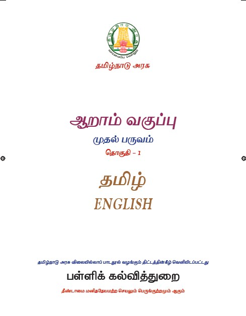
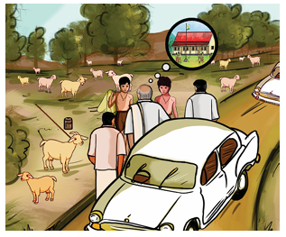
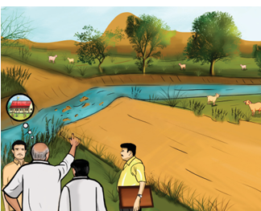
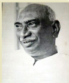
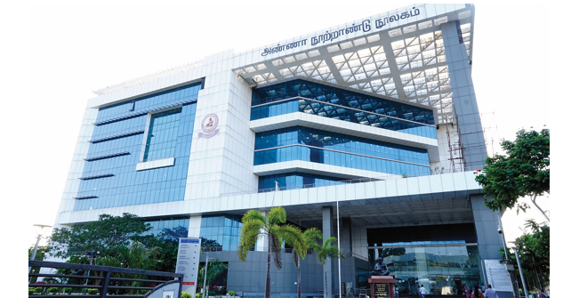
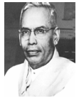
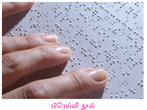
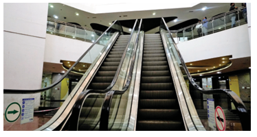
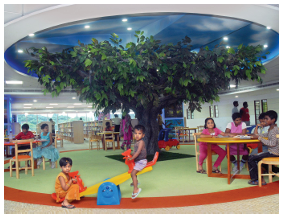

தமிழ்நாடு அரசு
முதல்பதிப்பு 2018
திருத்திய பதிப்பு 2019, 2020, 2021, 2022, 2023, 2025
மறுபதிப்பு 2024
புதிய பாடத்திட்டத்தின் கீழ் வெளியிடப்பட்ட முப்பருவநூல்
பாடநூல் உருவாக்கமும் தொகுப்பும்
மாநிலக் கல்வியியல் ஆராய்ச்சி மற்றும் பயிற்சி நிறுவனம்
© S C E R T 2018
நூல் அச்சாக்கம்
தமிழ்நாடு பாடநூல் மற்றும் கல்வியியல் பணிகள் கழகம்
www.textbooksonline.tn.nic.in
ஓர் அழைப்பு உங்கள் வாழ்க்கையை மாற்றும்,
18 வயதிற்குட்பட்ட குழந்தைகளுக்கான வாரத்தின் ஏழு நாட்களும் 24 மணிநேரமும் கட்டணமில்லாத் தொலைபேசி எண்கள்
குழந்தைத் திருமணம், குழந்தைத் தொழிலாளர் போன்ற பாதிப்புகளுக்கு உள்ளாக்கப்படுகிறீர்களா
மனம், உடல் மற்றும் பாலியல் சார்ந்த துன்புறுத்தலுக்கு உள்ளாக்கப்படுகிறீர்களா
பாதுகாப்பற்ற சூழலில் உள்ளீர்களா அழையுங்கள் குழந்தை உதவி எண் 1098, உங்கள் விவரங்கள் பிறருக்குத் தெரியாமல் பாதுகாக்கப்படும்
மனம், உடல் மற்றும் பாலியல் சார்ந்த துன்புறுத்தலுக்கு அல்லது
அச்சுறுத்தலுக்கு உள்ளாக்கப்படுகிறீர்களா
பாதுகாப்பற்ற சூழலில் உள்ளீர்களா
தேர்வு மற்றும் உயர்கல்விக்கு வழிகாட்டுதல் தேவையா?
அழையுங்கள் 1,4,4,1,7
உங்கள் விவரங்கள் பிறருக்குத் தெரியாமல் பாதுகாக்கப்படும்
கல்வி, அறிவுத் தேடலுக்கான பயணம் மட்டுமல்ல, எதிர்கால வாழ்விற்கு
அடித்தளம் அமைத்திடும் கனவின் தொடக்கமும்கூட. அதே போன்று,
பாடநூல் என்பது மாணவர்களின் கைகளில் தவழும் ஒரு வழிகாட்டி
மட்டுமல்ல, அடுத்த தலைமுறை மாணவர்களின் சிந்தனைப் போக்கை
வடிவமைத்திடும் வல்லமை கொண்டது என்பதையும் உணர்ந்துள்ளோம்.
பெற்றோர், ஆசிரியர் மற்றும் மாணவரின் வண்ணக் கனவுகளைக்
குழைத்து ஓர் ஓவியம் தீட்டியிருக்கிறோம். அதனூடே கீழ்க்கண்ட
நோக்கங்களையும் அடைந்திடப் பெருமுயற்சி செய்துள்ளோம்.
பயணிக்க வைத்தல்.
பெருமித உணர்வை மாணவர்கள் பெறுதல்.
நவீன உலகில் வெற்றிநடை பயில்வதை உறுதிசெய்தல்.
சாளரமாய்ப் புத்தகங்கள் விரிந்து பரவி வழிகாட்டுதல்.
உருமாற்றி, கற்றலின் இனிமையை உறுதிசெய்யும் தருணமாய் அமைத்தல்
புதுமையான வடிவமைப்பு, ஆழமான பொருள் மற்றும் குழந்தைகளின்
உளவியல் சார்ந்த அணுகுமுறை எனப் புதுமைகள் பல தாங்கி
உங்களுடைய கரங்களில் இப்புதிய பாடநூல் தவழும்பொழுது,
பெருமிதம் ததும்ப ஒரு புதிய உலகத்துக்குள் நீங்கள் நுழைவீர்கள்
என்று உறுதியாக நம்புகிறோம்.
ஜன கண மன அதிநாயக ஜய ஹே
பாரத பாக்ய விதாதா
பஞ்சாப ஸிந்து குஜராத மராட்டா
திராவிட உத்கல பங்கா
விந்திய ஹிமாசல யமுனா கங்கா
உச்சல ஜலதி தரங்கா
தவ சுப நாமே ஜாகே
தவ சுப ஆசிஸ மாகே
காஹே தவ ஜய காதா
ஜன கண மங்கள தாயக ஜய ஹே
பாரத பாக்ய விதாதா
ஜய ஹே ஜய ஹே ஜய ஹே
ஜய ஜய ஜய ஜய ஹே
மகாகவி இரவீந்திரநாத தாகூர்.
இந்தியத் தாயே மக்களின் இன்ப துன்பங்களைக் கணிக்கின்ற நீயே
எல்லாருடைய மனத்திலும் ஆட்சி செய்கிறாய். நின் திருப்பெயர் பஞ்சாபையும், சிந்துவையும், குஜராத்தையும், மராட்டியத்தையும், திராவிடத்தையும், உத்கலத்தையும், வங்காளத்தையும் உள்ளக் கிளர்ச்சி அடையச் செய்கிறது.
நின் திருப்பெயர் விந்திய இமயமலைத் தொடர்களில் எதிரொலிக்கிறது யமுனை,
கங்கை ஆறுகளின் இன்னொலியில் ஒன்றுகிறது, இந்தியக் கடலலைகளால்
வணங்கப்படுகிறது. அவை நின்னருளை வேண்டுகின்றன, நின் புகழைப் பரவுகின்றன. இந்தியாவின் இன்ப துன்பங்களைக் கணிக்கின்ற தாயே
உனக்கு வெற்றி! வெற்றி! வெற்றி
நீராருங் கடலுடுத்த நிலமடந்தைக் கெழிலொழுகும்
சீராரும் வதனமெனத் திகழ்பரதக் கண்டமிதில்
தெக்கணமும் அதிற்சிறந்த திராவிடநல் திருநாடும்
தக்கசிறு பிறைநுதலும் தரித்தநறுந் திலகமுமே
அத்திலக வாசனைபோல் அனைத்துலகும் இன்பமுற
எத்திசையும் புகழ்மணக்க இருந்தபெருந் தமிழணங்கே
தமிழணங்கே
உன் சீரிளமைத் திறம்வியந்து செயல்மறந்து வாழ்த்துதுமே
வாழ்த்துதுமே
வாழ்த்துதுமே
மனோன்மணீயம் பெ சுந்தரனார்.
ஒலி எழுப்பும் நீர் நிறைந்த கடலெனும் ஆடையுடுத்திய நிலமெனும் பெண்ணுக்கு,
அழகு மிளிரும் சிறப்பு நிறைந்த முகமாகத் திகழ்கிறது பரதக்கண்டம்.
அக்கண்டத்தில், தென்னாடும் அதில் சிறந்த திராவிடர்களின் நல்ல திருநாடும், பொருத்தமான பிறை போன்ற நெற்றியாகவும், அதிலிட்ட மணம் வீசும் திலகமாகவும் இருக்கின்றன.
அந்தத் திலகத்தில் இருந்து வரும் வாசனைபோல, அனைத்துலகமும் இன்பம்
பெறும் வகையில் எல்லாத் திசையிலும் புகழ் மணக்கும்படி புகழ் பெற்று இருக்கின்ற
பெருமைமிக்க தமிழ்ப் பெண்ணே தமிழ்ப் பெண்னே என்றும் இளமையாக
இருக்கின்ற உன் சிறப்பான திறமையை வியந்து உன் வயப்பட்டு எங்கள் செயல்களை மறந்து உன்னை வாழ்த்துவோமே வாழ்த்துவோமே வாழ்த்துவோமே
நாட்டின் உரிமை வாழ்வையும் ஒருமைப்பாட்டையும்
பேணிக்காத்து வலுப்படுத்தச் செயற்படுவேன் என்று உளமார
நான் உறுதி கூறுகிறேன்.
ஒருபோதும் வன்முறையை நாடேன் என்றும், சமயம்,
மொழி, வட்டாரம் முதலியவை காரணமாக எழும்
வேறுபாடுகளுக்கும் பூசல்களுக்கும் ஏனைய அரசியல்
பொருளாதாரக் குறைபாடுகளுக்கும் அமைதி நெறியிலும்
அரசியல் அமைப்பின் வழியிலும் நின்று தீர்வு காண்பேன்
என்றும் நான் மேலும் உறுதியளிக்கிறேன்.
இந்தியா எனது நாடு. இந்தியர் அனைவரும் என் உடன்
பிறந்தவர்கள். என் நாட்டை நான் பெரிதும் நேசிக்கிறேன்.
இந்நாட்டின் பழம்பெருமைக்காகவும் பன்முக மரபுச்
சிறப்புக்காகவும் நான் பெருமிதம் அடைகிறேன். இந்நாட்டின்
பெருமைக்குத் தகுந்து விளங்கிட என்றும் பாடுபடுவேன்.
என்னுடைய பெற்றோர், ஆசிரியர்கள், எனக்கு வயதில்
மூத்தோர் அனைவரையும் மதிப்பேன் எல்லாரிடமும் அன்பும்
மரியாதையும் காட்டுவேன்.
என் நாட்டிற்கும் என் மக்களுக்கும் உழைத்திட முனைந்து
நிற்பேன். அவர்கள் நலமும் வளமும் பெறுவதிலேதான் என்றும்
மகிழ்ச்சி காண்பேன்.
உலகின் மூத்த மொழியாம் தமிழின்
பல்வேறு பரிமாணங்களை
இன்றைய இளம்தலைமுறைக்கு
அறிமுகப்படுத்தும் ஒரு துணைக்கருவியாக இப்பாடநூல்.
ஆளுமை மிக்க ஆசிரியர்களுக்கும்
ஆற்றல் நிறை மாணவர்களுக்கும்
ஒவ்வோர் இயலையும் ஆர்வத்துடன் அணுக உரைநடை உலகம், கவிதைப்பேழை, விரிவானம், கற்கண்டு ஆகிய தலைப்புகளாக
பொருண்மைக்கு ஏற்ப இயலின் தொடக்கத்தில் கற்றல் நோக்கங்கள்
பாடப்பகுதிகளின் கருத்தை விளக்குவதற்கு அரிய, புதிய செய்திகளை
அறிந்துகொள்ளத் தெரிந்து தெளிவோம்.
பயின்ற பாடங்கள் குறித்துச் சிந்திக்க கற்றல் செயல்பாடுகளைக் கற்பவை கற்ற பின்
இயலின் இறுதியில் விழுமியப் பக்கமாக நிற்க அதற்குத் தக
உயர்சிந்தனைத் திறன்பெற, படைப்பாக்கத்தின்வழி வாழ்வைத்
தன்னம்பிக்கையுடன் எதிர்கொள்ள, படித்துச்சுவைக்க, மொழியோடு விளையாடு
இலக்கியச்சுவை உணர்ந்து நுட்பங்களை உள்வாங்கி மொழியை ஆற்றலுடன்
பயன்படுத்த மொழியை ஆள்வோம்
மாணவர்தம் அடைவை அளவிட மதிப்பீடு
பயின்ற பாடங்கள் குறித்துச் சிந்திக்க, கற்றல் செயல்பாடுகளாகக் கற்பவை
கற்றபின்
மொழிப்பாடத்தை மட்டுமல்லாமல் பிறபாடங்களைப் பயில, கருத்துகளைப் புரிந்து எதிர்வினையாற்ற உதவும் ஏணியாய் புதிய வடிவம், பொலிவான
உள்ளடக்கத்துடன் இப்பாடநூல் உங்கள் கைகளில்
வரிசை எண் |
பொருண்மமை இயல் |
பாடத்தலைப்புகள் |
பக்க எண் |
மாதம்
|
இயல் ஒன்று |
|
இன்பத்தமிழ் நட்சத்திரக் குறியீடு தமிழ் எழுத்துகளின் வகையும் தொகையும்
|
2
5 11
14 |
ஜூன் |
இயல் இரண்டு |
|
திருக்குறள் நட்சத்திரக் குறியீடு |
20 22
27
33
38 |
ஜூலை |
இயல் மூன்று |
|
கல்வியைப் போற்று நட்சத்திரக் குறியீடு
|
42
44
47
51
55 |
ஆகஸ்ட் செப்டம்பர்
|
நட்சத்திரக் குறியிட்ட பாடல்கள் மனப்பாடப்பகுதி ஆகும்
மின் நூல்
மதிப்பீடு

நுழையும் முன்
நமது தாய்மொழியாகிய தமிழைத் தமிழ் இலக்கியங்கள் போற்றுகின்றன. தமிழ் வணக்கம் தற்கால இலக்கிய மரபாக ஆகிவிட்டது. பாரதிதாசன் தமிழைப் பலவாறாகப் போற்றுகிறார். கண்ணே மணியே என்று குழந்தையைச் செல்லமாகக் கொஞ்சுவதும் உண்டு. அதுபோல அவர் நம் செந்தமிழுக்குப் பெயர்கள் பல சூட்டி மகிழ்வதைக் காண்போம்.
தமிழுக்கும் அமுதென்று பேர் அந்தத்
தமிழ் இன்பத் தமிழ்எங்கள் உயிருக்கு நேர், மனப்பாடப் பகுதி
தமிழுக்கு நிலவென்று பேர் இன்பத்
தமிழ் எங்கள் சமூகத்தின் விளைவுக்கு நீர், மனப்பாடப் பகுதி
தமிழுக்கு மணமென்று பேர் இன்பத்
தமிழ் எங்கள் வாழ்வுக்கு நிருமித்த ஊர், மனப்பாடப் பகுதி
தமிழ் எங்கள் இளமைக்குப் பால் இன்பத்
தமிழ் நல்ல புகழ்மிக்க புலவர்க்கு வேல், மனப்பாடப் பகுதி
தமிழ் எங்கள் உயர்வுக்கு வான் இன்பத்
தமிழ் எங்கள் அசதிக்குச் சுடர்தந்த தேன்
தமிழ் எங்கள் அறிவுக்குத் தோள் இன்பத்
தமிழ் எங்கள் கவிதைக்கு வயிரத்தின் வாள்
பாரதிதாசன்
நிருமித்த, உருவாக்கிய
விளைவு, வளர்ச்சி
சமூகம், மக்கள் குழு
அசதி , சோர்வு
தமிழுக்கு அமுது என்று பெயர். இன்பம் தரும் அந்தத் தமிழ் எங்கள் உயிருக்கு இணையானது.
தமிழுக்கு நிலவு என்று பெயர். இன்பத்தமிழ் எங்கள் சமூக வளர்ச்சிக்கு
அடிப்படையான நீர் போன்றது.
தமிழுக்கு மணம் என்று பெயர். அது எங்கள் வாழ்விற்காகவே உருவாக்கப்பட்ட ஊர் ஆகும்.
தமிழ் நாங்கள் இளமையோடு இருப்பதற்குக் காரணமான பால் போன்றது. நல்ல புகழ்மிகுந்த புலவர்களுக்கு அது கூர்மையான வேல் போன்ற கருவியாகும்.
தமிழ் எங்கள் உயர்விற்கு எல்லையாகிய வானம் போன்றது. இன்பத்தமிழ் எங்கள் சோர்வை நீக்கி ஒளிரச் செய்யும் தேன் போன்றது.
தமிழ் எங்கள் அறிவுக்குத் துணை கொடுக்கும் தோள் போன்றது. தமிழ் எங்கள் கவிதைக்கு வைரம் போன்ற உறுதிமிக்க வாள் ஆகும்.
இயைபு
பேர், நேர், பால், வேல் என அடிகளின் இறுதியில் வரும் சொற்கள் ஒரே ஓசையில் முடிந்துள்ளன. இவ்வாறு சொற்கள் ஒரே ஓசையில் முடிவதை இயைபுத்தொடை என்பர்.
நூல் வெளி

பாரதிதாசனின் இயற்பெயர் சுப்புரத்தினம். பாரதியாரின் கவிதைகள் மீது கொண்ட பற்றின் காரணமாகத் தம் பெயரைப் பாரதிதாசன் என மாற்றிக்கொண்டார். தம் கவிதைகளில் பெண்கல்வி, கைம்பெண் மறுமணம், பொதுவுடைமை, பகுத்தறிவு முதலான புரட்சிகரமான கருத்துகளைப் பாடுபொருளாகப் பாடியுள்ளளார். எனவே, இவர் புரட்சிக்கவி என்று போற்றப்படுகிறார். இவர் பாவேந்தர் என்றும் சிறப்பிக்கப்படுகிறார்.
இப்பாடல், பாரதிதாசன் கவிதைகள் என்ற நூலில் தமிழ் என்னும்
தலைப்பின்கீழ் இடம்பெற்றுள்ளது.
கற்பவை கற்றபின்
1 இன்பத்தமிழ் என்ற பாடலை இனிய ஓசையுடன் பாடுக.
2 தமிழுக்கு நீங்கள் சூட்ட விரும்பும் பெயர்களைப் பட்டியலிடுக.
3 தமிழ்க் கவிதைகள், பாடல்களைப் படித்து மகிழ்க.
எடுத்துக்காட்டு தமிழே உயிரே வணக்கம்
தாய்பிள்ளை உறவம்மா உனக்கும் எனக்கும்
அமிழ்தே நீ இல்லை என்றால்
அத்தனையும் வாழ்வில் கசக்கும் புளிக்கும்
தமிழே உன்னை நினைக்கும்
தமிழன் என் நெஞ்சம் இனிக்கும் இனிக்கும்
காசி ஆனந்தன்
1 ஏற்றத் தாழ்வற்ற டேஷ் அமைய வேண்டும்.
அ, சமூகம்
ஆ, நாடு
இ, வீடு
ஈ, தெரு
2 நாள் முழுவதும் வேலை செய்து களைத்தவர்க்கு டேஷ் ஆக இருக்கும்.
அ, மகிழ்ச்சி
ஆ, கோபம்
இ, வருத்தம்
ஈ, அசதி
3 நிலவு கூட்டல் என்று என்பதனைச் சேர்த்தெழுதக் கிடைக்கும் சொல் டேஷ்
அ, நிலயென்று
ஆ, நிலவென்று
இ, நிலவன்று
ஈ, நிலவுஎன்று
4 தமிழ் கூட்டல் எங்கள் என்பதனைச் சேர்த்தெழுதக் கிடைக்கும் சொல் டேஷ்
அ, தமிழங்கள்
ஆ, தமிழெங்கள்
இ, தமிழுங்கள்
ஈ, தமிழ்எங்கள்
5 அமுதென்று என்னும் சொல்லைப் பிரித்து எழுதக் கிடைப்பது டேஷ்
அ, அமுது கூட்டல் தென்று
ஆ, அமுது கூட்டல் என்று
இ, அமுது கூட்டல் ஒன்று
ஈ, அமு கூட்டல் தென்று
6 செம்பயிர் என்னும் சொல்லைப் பிரித்து எழுதக் கிடைப்பது டேஷ்
அ, செம்மை கூட்டல் பயிர்
ஆ, செம் கூட்டல் பயிர்
இ, செமை கூட்டல் பயிர்
ஈ, செம்பு கூட்டல் பயிர்
1, விளைவுக்கு பால்
2, அறிவுக்கு வேல்
3, இளமைக்கு நீர்
4,. புலவர்க்கு தோள்
எடுத்துக்காட்டு பேர் நேர்
1, பாரதிதாசன் தமிழுக்குச் சூட்டியுள்ள பெயர்கள் யாவை
2, நீங்கள் தமிழை எதனோடு ஒப்பிடுவீர்கள்
1, இன்பத் தமிழ் பாடலில் உங்களுக்குப் பிடித்த அடிகள் இரண்டனை எழுதுக.
2, சமூக வளர்ச்சிக்கும் நீருக்கும் உள்ள தொடர்பு யாது
வேல் என்பது ஓர் ஆயுதம். தமிழ் ஏன் வேலுடன் ஒப்பிடப்படுகிறது
நுழையும் முன்
மூத்த தமிழ்மொழி என்றும் இளமையானது, எளிமையானது, இனிமையானது, வளமையானது, காலத்திற்கேற்பத் தன்னைத் தகுதிப்படுத்திக்கொள்வது, நினைக்கும்போதே நெஞ்சில் இனிப்பது, நம் வாழ்வைச் செழிக்கச் செய்வது. உலகச் செம்மொழிகளுள் ஒன்றாக விளங்கும் தமிழ்மொழியின் சிறப்புகளை அறியலாம் வாருங்கள்.
மனித இனப் பரிணாம வளர்ச்சியின் சிறப்புகளுள் ஒன்று மொழி. மனிதரைப் பிற உயிரினங்களிடம் இருந்து வேறுபடுத்தியும் மேம்படுத்தியும் காட்டுவது மொழி. நாம் சிந்திக்க மொழி உதவுகிறது. சிந்தித்ததை வெளிப்படுத்தவும் உதவுகிறது. பிறர் கருத்தை நாம் அறிய உதவுவதும் மொழியே. உலகில் ஆறாயிரத்திற்கும் மேற்பட்ட மொழிகள் உள்ளன. இவற்றுள் சில மொழிகள் மட்டுமே பேச்சு வடிவம், எழுத்து வடிவம் ஆகிய இரண்டையும் பெற்றுள்ளன.
உலக மொழிகள் பலவற்றுள் இலக்கண, இலக்கியவளம் பெற்றுத் திகழும் மொழிகள் மிகச்சிலவே. அவற்றுள் செம்மை மிக்க மொழி என ஏற்றுக்கொள்ளப்பட்டவை சில மொழிகளே. தமிழ்மொழி அத்தகு சிறப்பு மிக்க செம்மொழியாகும்.
தமிழ் இலக்கியங்கள் இனிமையானவை. ஓசை இனிமை, சொல் இனிமை, பொருள் இனிமை கொண்டவை. பல மொழிகள் கற்ற கவிஞர் பாரதியார்,
யாமறிந்த மொழிகளிலே தமிழ்மொழி போல் இனிதாவது எங்கும் காணோம் என்று தமிழ்மொழியின் இனிமையை வியந்து பாடுகிறார்.

என்று பிறந்தவள் என்று உணராத இயல்பினளாம் எங்கள் தாய்
என்று பாரதியார் கூறிய கருத்து தமிழ்த்தாய்க்கும் பொருந்துவதாக உள்ளது.
சாலைகள் தோன்றிய பிறகே சாலை விதிகள் தோன்றியிருக்கும். அதுபோல இலக்கியம் தோன்றிய பிறகே அதற்குரிய இலக்கண விதிகள் தோன்றியிருக்க வேண்டும். தொல்காப்பியம் தமிழில் நமக்குக் கிடைத்துள்ள மிகப் பழைமையான இலக்கண நூல் ஆகும். அப்படி என்றால் அதற்கும் முன்னதாகவே தமிழில் இலக்கிய நூல்கள் இருந்திருக்க வேண்டும் அல்லவா, இதனைக் கொண்டு தமிழ் மிகவும் தொன்மையான மொழி என்பதை உணரலாம்.

தமிழ்மொழி பேசவும் படிக்கவும் எழுதவும் உகந்த மொழி.
உயிரும் மெய்யும் இணைவதால் தோன்றுபவை உயிர்மெய் எழுத்துகள். உயிர் எழுத்துகள், மெய் எழுத்துகள் ஆகியவற்றின் ஒலிப்பு முறைகளை அறிந்துகொண்டால் உயிர்மெய் எழுத்துகளை எளிதாக ஒலிக்கலாம்.
எழுத்துகளைக் கூட்டி ஒலித்தாலே தமிழ் படித்தல் இயல்பாக நிகழ்ந்துவிடும்.
எடுத்துக்காட்டு அ கூட்டல் மு கூட்டல் து சமம் அமுது.
தமிழ்மொழியை எழுதும் முறையும் மிக எளிதுதான். இதற்கேற்ப, தமிழ் எழுத்துகள் பெரும்பாலும் வலஞ்சுழி எழுத்துகளாகவே அமைந்துள்ளன.
எடுத்துக்காட்டு வலஞ்சுழி எழுத்துகள் அ, எ, ஔ, ண, ஞ
இடஞ்சுழி எழுத்துகள் ட , ய, ழ
சொல், தமிழ் |
முதலில் ஆளப்படும் இலக்கியம், தொல்காப்பியம் |
மேற்கோள், தமிழென் கிளவியும் அதனோ ரற்றே தொல் எழுத்து 385
|
சொல், தமிழ்நாடு |
முதலில் ஆளப்படும் இலக்கியம், சிலப்பதிகாரம் வஞ்சிக்காண்டம் |
மேற்கோள், இமிழ்கடல் வேலியைத் தமிழ்நாடு ஆக்கிய இதுநீ கருதினை ஆயின் வஞ்சி 165
|
சொல், தமிழன் |
முதலில் ஆளப்படும் இலக்கியம், அப்பர் தேவாரம் |
மேற்கோள், தமிழன் கண்டாய் திருத்தாண்டகம் 23
|
சீர்மை என்பது ஒழுங்கு முறையைக் குறிக்கும் சொல். தமிழ்மொழியின் பலவகைச் சீர்மைகளுள் அதன் சொற்சிறப்பு குறிப்பிடத்தக்கது.
உயர்திணை, அக்றிணை என இருவகைத் திணைகளை அறிவோம். உயர்திணையின் எதிர்ச்சொல் தாழ்திணை என அமையவேண்டும். ஆனால், தாழ்திணை என்று கூறாமல் அக்றிணை அல் கூட்டல் திணை சமம் உயர்வு அல்லாத திணை என்று பெயர் இட்டனர் நம் முன்னோர்.
பாகற்காய் கசப்புச்சுவை உடையது. அதனைக் கசப்புக்காய் என்று கூறாமல், இனிப்பு அல்லாத காய் பாகற்காய் பாகு கூட்டல் அல் கூட்டல் காய் என வழங்கினர். இவ்வாறு பெயரிடுவதிலும் சீர்மை மிக்கது நமது தமிழ்மொழி.

தமிழ் வளமை மிக்க மொழி. தொல் காப்பியம், நன்னூல் உள்ளிட்ட
இலக்கண நூல்கள் மிகுந்தது தமிழ்மொழி. எட்டுத்தொகை, பத்துப்பாட்டு ஆகிய சங்க இலக்கியங்களைக் கொண்டது, திருக்குறள், நாலடியார் முதலிய அறநூல்கள் பலவும் நிறைந்தது, சிலப்பதிகாரம், மணிமேகலை முதலிய காப்பியங்களைக் கொண்டது. இவ்வாறு இலக்கிய, இலக்கண வளம் நிறைந்தது தமிழ்மொழி.
தமிழ்மொழி சொல்வளம் மிக்கது. ஒரு பொருளின் பல நிலைகளுக்கும் வெவ்வேறு பெயர் சூட்டுவது தமிழ்மொழியின் சிறப்பாகும். சான்றாக, தோன்றுவது முதல் உதிர்வது வரை உள்ள பூவின் ஏழுநிலைகளுக்கும் தனித்தனிப் பெயர்கள் தமிழில் உண்டு.
ஓர் எழுத்தே ஒரு சொல்லாகிப் பொருள்தருவதும் உண்டு. ஒரு சொல் பல
பொருளைக் குறித்து வருவதும் உண்டு. சான்றாக மா என்னும் ஒரு சொல் மரம், விலங்கு, பெரிய, திருமகள், அழகு, அறிவு, அளவு, அழைத்தல், துகள், மேன்மை, வயல், வண்டு போன்ற பல பொருள்களைத் தருகிறது.
தமிழுக்கு முத்தமிழ் என்னும் சிறப்புப் பெயரும் உண்டு. இயல்தமிழ் எண்ணத்தை வெளிப்படுத்தும்; இசைத்தமிழ் உள்ளத்ததை மகிழ்விக்கும்; நாடகத்தமிழ் உணர்வில் கலந்து வாழ்வின் நிறைகுறைகளைச் சுட்டிக் காட்டும்.
தமிழில் காலந்தோறும் பல வகையான இலக்கிய வடிவங்கள் புதிது புதிதாக உருவாகி வருகின்றன. செய்யுள்,கவிதை, புதுக்கவிதை, துளிப்பா போன்றன தமிழ்க் கவிதை வடிவங்கள், கட்டுரை, புதினம், சிறுகதை போன்றன உரைநடை வடிவங்கள். தற்போது அறிவியல் தமிழ், கணினித்தமிழ் என்று மேலும் மேலும் வளர்ந்து கொண்டே வருகிறது.
பெட்டிச் செய்தி ஆரம்பம்
தெரிந்து தெளிவோம்
தாவர இலைப் பெயர்கள்
|
|
ஆல், அரசு, மா, பலா, வாழை |
இலை |
அகத்தி, பசலை, முருங்கை |
கீரை |
அருகு, கோரை |
புல் |
நெல்,வரகு |
தாள் |
மல்லி |
தழை |
சப்பாத்திக் கள்ளி, தாழை |
மடல் |
கரும்பு நாணல் |
தோகை |
பனை, தென்னை |
ஓலை |
கமுகு அல்லது பாக்கு |
கூந்தல்
|
பெட்டிச் செய்தி முடிவு
புதுமை மொழி
இன்றைய அறிவியல், தொழில்நுட்ப வளர்ச்சிக்கு ஏற்ப, தமிழில் புதிய புதிய கலைச்சொற்கள் உருவாகி வருகின்றன. இணையம், முகநூல் , புலனம், குரல் தேடல், தேடுபொறி, செயலி, தொடுதிரை முதலிய சொற்களை இதற்கு எடுத்துக்காட்டாகக் கூறலாம். சமூக ஊடகங்களான செய்தித்தாள், வானொலி, தொலைக்காட்சி ஆகியவற்றிலும் பயன்படத்தக்க மொழியாக விளங்குகிறது தமிழ்மொழி.

உலகில் எழுத்து வடிவம் பெறாத மொழிகள் பல உள்ளன. இந்நிலையில்
தமிழ் வரிவடிவ எழுத்துகள் அறிவியல் தொழில்நுட்ப நோக்கிலும் பயன்படுத்தத் தக்கவையாக உள்ளன. மொழியைக் கணினியில் பயன்படுத்த வேண்டும் என்றால் அஃது எண்களின் அடிப்படையில் வடிவமைக்கப்படவேண்டும். தொல்காப்பியம், நன்னூல் போன்றவை நாம் படிப்பதற்காக எழுதப்பட்டவை. ஆயினும் அவை கணினி மொழிக்கும் ஏற்ற நுட்பமான வடிவத்தையும் பெற்றுள்ளன.
தெரிந்து தெளிவோம்
தமிழ் எண்களை அறிவோம்.
1 |
2 |
3 |
4 |
5 |
6 |
7 |
8 |
9 |
10 |
௧ |
௨ |
௩ |
௪ |
௫ |
௬ |
௭ |
௮ |
௯ |
௧ ௦
|
மூத்த மொழியான தமிழ் கணினி, இணையம் போன்றவற்றில் பயன்படத்தக்க வகையில் புது மொழியாகவும் திகழ்கிறது. இத்தகு சிறப்பு மிக்க மொழியைக் கற்பது நமக்குப் பெருமையாகும். தமிழ் மொழியின் வளமைக்கும் வளர்ச்சிக்கும் பங்காற்ற வேண்டியது நமது கடமையாகும்.

கற்பவை கற்றபின்
1, மாற்றங்களுக்கு ஏற்பத் தன்னைப் புதுப்பித்துக் கொள்ளும் மொழி தமிழ் என்பது பற்றிக் கலந்துரையாடுக.
2, தமிழ் மொழி பேசத்தெரியாத குடும்பத்தினர் உங்கள் பக்கத்து வீட்டில் உள்ளனர். அவர்களுக்கு நீங்கள் கற்றுத்தர விரும்பும் பத்துத் தமிழ்ச் சொற்களைப் பட்டியலிடுக.
3, வாழ்த்துகளைத் தமிழில் கூறுவோம்.
எடுத்துக்காட்டு
பிறந்தநாள் வாழ்த்து
நீண்ட நீண்ட காலம் நீ, நீடு வாழ வேண்டும்
வானம் தீண்டும் தூரம் நீ, வளர்ந்து வாழ வேண்டும்
அன்பு வேண்டும் அறிவு வேண்டும் பண்பு வேண்டும் பரிவு வேண்டும்
எட்டுத்திக்கும் புகழ வேண்டும் எடுத்துக்காட்டு ஆக வேண்டும்
உலகம் பார்க்க உனது பெயரை, நிலவுத் தாளில் எழுதவேண்டும்
சர்க்கரைத் தமிழ் அள்ளி, தாலாட்டு நாள் சொல்லி வாழ்த்துகிறோம்
பிறந்தநாள் வாழ்த்துகள் பிறந்தநாள் வாழ்த்துகள்
இனிய பிறந்தநாள் வாழ்த்துகள்!
அறிவுமதி
சரியான விடையைத் தேர்ந்தெடுத்து எழுதுக.
1, தொன்மை என்னும் சொல்லின் பொருள் டேஷ்
அ, புதுமை
ஆ, பழமை
இ, பெருமை
ஈ), சீர்மை
2, இடப்புறம் என்னும் சொல்லைப் பிரித்து எழுதக் கிடைப்பது
டேஷ்
அ, இடன் கூட்டல் புறம்
ஆ, இடை கூட்டல் புறம்
இ, இடம் கூட்டல் புறம்
ஈ, இடப் கூட்டல் புறம்
3, சீரிளமை’ என்னும் சொல்லைப் பிரித்து எழுதக் கிடைப்பது டேஷ்
அ, சிறு கூட்டல் இளமை
ஆ, சீர்மை கூட்டல் இளமை
இ, சீரி கூட்டல் இளமை
ஈ, சீற் கூட்டல் இளமை
4, சிலம்பு கூட்டல் அதிகாரம் என்பதனைச் சேர்த்தெழுதக் கிடைக்கும் சொல் டேஷ்
அ, சிலம்பதிகாரம்
ஆ, சிலப்பதிகாரம்
இ, சிலம்புதிகாரம்
ஈ, சிலபதிகாரம்
5, கணினி கூட்டல் தமிழ் என்பதனைச் சேர்த்தெழுதக் கிடைக்கும் சொல் டேஷ்
அ, கணினிதமிழ்
ஆ, கணினித்தமிழ்
இ, கணிணிதமிழ்
ஈ, கனினிதமிழ்
6, தமிழ்மொழி போல் இனிதாவது எங்கும் காணோம் என்று பாடியவர் டேஷ்
அ, கண்ணதாசன்
ஆ, பாரதியார்
இ, பாரதிதாசன்
ஈ, வாணிதாசன்
7, மா என்னும் சொல்லின் பொருள் டேஷ்
அ, மாடம்
ஆ, வானம்
இ, விலங்கு
ஈ, அம்மா
1, நாம் சிந்திக்கவும் சிந்தித்ததை வெளிப்படுத்தவும் உதவுவது டேஷ்
2, தமிழில் நமக்குக் கிடைத்துள்ள மிகப் பழமையான இலக்கண நூல் டேஷ்
3, மொழியைக் கணினியில் பயன்படுத்த வேண்டும் எனில், அக்து டேஷ் அடிப்படையில் வடிவமைக்கப்பட வேண்டும்.
1, தனிச்சிறப்பு டேஷ்
2, நாள்தோறும் டேஷ்
1, தமிழ் ஏன் மூத்தமொழி என்று அழைக்கப்படுகிறது
2, நீங்கள் அறிந்த தமிழ்க் காப்பியங்களின் பெயர்களை எழுதுக
1, அக்றிணை, பாகற்காய் ஆகிய சொற்களின் பொருள் சிறப்பு யாது
2, தமிழ் இனிய மொழி என்பதற்கான காரணம் தருக.
3, தமிழ் மொழியின் சிறப்பைக் குறித்து ஐந்து வரிகளில் எழுதுக.
1, தமிழ் மொழி படிக்கவும் எழுதவும் எளியது என்பது பற்றி உங்கள் கருத்து யாது
2, தமிழ் மொழி வளர்மொழி என்பதை உணர்கிறீர்களா, காரணம் தருக.
குழந்தைகளிடமும் மாணவர்களிடமும் மிகுந்த அன்பு காட்டியவர் மறைந்த மேனாள் குடியரசுத் தலைவர் ஏ பீ ஜே அப்துல் கலாம். மாணவர்கள் முன்னேறப் பல வழிகளை எடுத்துச் சொன்னவர். எதிர்காலம் பற்றிக் கனவுகண்டு, அதை அடைய வேண்டும் என்பது அவர் கனவாக இருந்தது. மாணவர்களோடு பேசுவதை மிகவும் விரும்பிய அவரைச் சந்தித்தால் மகிழ்ச்சியாக இருக்கும் அல்லவா, வாருங்கள் அவரிடம் கேட்டிடலாம் அறிவியலைக் கற்றிடலாம்.
மாணவர்கள் தொழில்நுட்பக் கண்காட்சி அரங்குகளை ஒவ்வொன்றாகப் பார்வையிட்டுக் கொண்டே வருகின்றனர். அங்கிருக்கும் கலாம் அரங்கு என்னும் பெயர்ப்பலகை அவர்களின் கவனத்தை ஈர்க்கிறது. அரங்கினுள் ஆர்வத்துடன் நுழைகின்றனர். அங்கு அப்துல் கலாமின் புகைப்படங்கள் காட்சிப்படுத்தப்பட்டு இருக்கின்றன. அவற்றைப் பார்வையிட்டு முடித்த நேரத்தில் அங்கே ஒரு பெரிய திரை இருப்பதைக் காண்கின்றனர். திரையின் கீழே அப்துல் கலாமிடம் நீங்கள் கேட்க விரும்பும் வினாக்களைத் திரையை நோக்கிக் கேளுங்கள். உங்கள் வினாக்களுக்கு அப்துல் கலாம் திரையில் தோன்றி, பதில் அளிப்பார் என்று எழுதி இருந்தது. மாணவர்கள் திரையை நோக்கி வினாக்களைக் கேட்கத் தொடங்கினர்.
அருண்மொழி
முதல் கேள்வியை நான் கேட்கிறேன். அறிவியல் மீது உங்களுக்கு ஆர்வம் ஏற்படக் காரணமான முதல் நிகழ்வு எது ஐயா
அப்துல் கலாம் திரையில் தோன்றி பதில் அளிக்கிறார்

அப்துல் கலாம்
நான் பத்து வயதுச் சிறுவனாக இருந்த போது என் அறிவியல் ஆசிரியர் பறவைகள் எப்படிப் பறக்கின்றன என்பதை விளக்கிக் கூறினார். அன்று முதல், வானில் பறக்க வேண்டும் என்பது என் வாழ்க்கையின் குறிக்கோள் ஆகிவிட்டது. அதுவே என் அறிவியல் ஆர்வத்தின் தொடக்கம்.
தேன்மொழி,
அடுத்து நான் கேட்கட்டுமா நீங்கள் படித்த புத்தகங்களில் உங்களுக்கு மிகவும் பிடித்த புத்தகம் எது ஐயா
அப்துல் கலாம்,
தமிழில் திருக்குறள் எனக்கு மிகவும் பிடித்த நூலாகும். அதுபோல் லிலியன் வாட்சன் எழுதிய, விளக்குகள் பல தந்த ஒளி (Lights from many lamps) என்னும் நூலையும் எனக்கு மிகவும் பிடிக்கும். அதைப் படித்தபோது அறிவு, தன்னம்பிக்கை, மகிழ்ச்சி ஆகிய மூன்றையும்
பெற்றேன்.

அப்துல்லா,
நீங்கள் பெரிதும் மகிழ்ந்த நிகழ்வு ஏவுகணைச் சோதனைதான் அல்லவா
அப்துல் கலாம்,
இல்லை. போலியோவினால் பாதிக்கப்பட்டவர்கள் மூன்று கிலோ எடையுள்ள செயற்கைக் கால்களைப் பொருத்திக் கொண்டு சிரமப்பட்டு நடப்பதைக் கண்டடேன். பாதுகாப்புக் கருவிகளில் பயன்படுத்தப்படும் கார்பன் இழையைக் கொண்டு முந்நூறு கிராம் எடையில் செயற்கைக் கால்கள் உருவாக்கப்பட்டன. அதனை அவர்கள் அணிந்து மகிழ்ந்த நிகழ்ச்சிதான் எனக்குப் பெருமகிழ்வை அளித்தது.
வான்மதி,
நூறு ஆண்டுகளுக்குப் பிறகு நமது இந்தியா எப்படி இருக்கும் என நினைக்கிறீர்கள் ஐயா
அப்துல் கலாம்,
மூன்று சிறப்புகளைப் பெற்றிருக்கும் என நான் நம்புகிறேன்.
1, ஆயிரம் வருடங்களுக்கு முன்பு நாளந்தா பல்கலைக்கழகத்தில் இருந்ததைப் போல வலுவான கல்வி முறை இருக்கும்.
2, அனைத்து இயற்கை வளங்களும் தீர்ந்து போயிருக்கும். ஆயினும், நாம் தயாரித்து அனுப்பிய செயற்கைக்கோள்கள் சூரிய சக்தியைப் பெற்று நமக்கு அளிக்கும்.
3, செவ்வாய்க் கோளில் மனித இனம் குடியேறி இருக்கும்.
மேரி,
செவ்வாய்க் கோளில் மனிதர் வாழ முடியுமா? சரி. எங்களையெல்லாம் எப்போது நிலவிற்கு அழைத்துச் செல்வீர்கள்?
அப்துல் கலாம்,
525 கிலோ எடையுள்ள ஆளில்லாச் செயற்கைக்கோளை இந்தியா நிலவுக்கு அனுப்பியுள்ளது. அடுத்தடுத்த ஆண்டுகளில் ஏவூர்திகளில் மனிதர்களை நிலவிற்கு அனுப்புவோம். எனவே, நிலவிற்குச் செல்லத் தயாராக இருங்கள்.
பாத்திமா,
நிலவிற்குச் செல்லலாம் என்றால் சூரியனுக்கும் கூடச் செல்ல முடியுமா ஐயா
அப்துல் கலாம்,
சூரியன் தொடர்ந்து எரிந்து கொண்டே இருப்பதால் ஒளியையும் வெப்பத்தையும் வெளியிட்டுக்கொண்டே இருக்கிறது. அவ்வெப்பத்தைத் தாங்கும் அளவுக்கு இன்றைய சூழலில் கவசங்கள் இல்லை. வருங்காலத்தில் அதிகபட்ச வெப்பத்தைத் தாங்கும் கருவிகளைக் கண்டுபிடித்தால் அப்போது மனிதன் சூரியனையும் கூடச் சென்றடையலாம்.
இளம்பிறை,
ஐயா, உலகின் முதல் விஞ்ஞானியாக யாரைக் கூறலாம் சொல்லுங்களேன்
அப்துல் கலாம்,
அறிவியலின் அடிப்படை, கேள்வி கேட்கின்ற மனப்பான்மைதான். அறிவியல் பிறந்தது, வளர்வது, வாழ்வது எல்லாம் இந்தக் கேள்வி கேட்கும் திறனால்ததான். குழந்தைகளின் கேள்விகளுக்குத்தான் முடிவே இல்லை. கேள்வி கேட்கும் ஒவ்வொரு குழந்தையும் விஞ்ஞானிதான். எனவே குழந்தைகளாகிய நீங்கள்தான் இவ்வுலகின் முதல் விஞ்ஞானிகள்
கவி அமுதன்,
நாங்கள்தான் முதல் விஞ்ஞானிகளா அப்படியென்றால் வளரும் இந்தியாவிற்கான எங்கள் பங்கு என்னவாக இருக்க வேண்டும் ஐயா
அப்துல் கலாம்,
மாணவர்களாகிய நீங்கள் வருங்காலத்தில் எந்தத் துறையைத் தேர்ந்தெடுத்துக் கற்றாலும் அதில் உயர்ந்த குறிக்கோளை மனதில் கொள்ளுங்கள். அக்குறிக்கோளுக்கான அறிவையும் அனுபவத்தையும் சேகரித்துக் கொள்ளுங்கள். கடின உழைப்பால் வெற்றியடையுங்கள். உங்கள் வெற்றி இந்தியாவின் வெற்றிக்கு உதவும்

வெண்பா,
வெற்றியை அடையும் வழி எது ஐயா
அப்துல் கலாம்,
வெற்றியை அடைய இரண்டு வழிகள் உள்ளன.
1 அறிவை வளர்க்கும் அனைவரின் பேச்சையும் கவனமுடன் கேளுங்கள்.
2 முயற்சி, உழைப்பு, உயர்வு, வெற்றி
நன்றி குழந்தைகளே என்றபடி திரையில் அப்துல் கலாம் கையசைத்து மெல்ல மறைகிறார். மாணவ மாணவியர் புத்தொளி பெற்றவர்களாக அரங்கைவிட்டு வெளியேறுகின்றனர்
கற்பவை கற்றபின்
1, கனவு காணுங்கள் என்பது அப்துல் கலாமின் பொன்மொழி. உங்கள் கனவுகள் பற்றி வகுப்பில் கலந்துரையாடுக.
2, நீங்கள் நேர்காணல் செய்ய விரும்பும் ஒருவரைக் குறிப்பிடுக. அவரிடம் கேட்க விரும்பும் ஐந்து வினாக்களைப் பட்டியலிடுக.
3, நீங்கள் அப்துல் கலாமிடம் கேட்க விரும்பும் வினாக்களை எழுதுக.
தமக்குப் பெருமகிழ்வை அளித்ததாக அப்துல் கலாம் குறிப்பிடும் நிகழ்வு யாது
உலகில் உள்ள ஒவ்வொரு பொருளையும் மனிதன் உற்றுநோக்கினான். அவற்றின் இயல்புகளை அறிந்துகொண்டான். இவ்வாறே மொழியையும் ஆழ்ந்து கவனித்தான். மொழியை எவ்வாறு பேசவும் எழுதவும் வேண்டும் என்பதை வரையறை செய்தான். அந்த வரையறைகளே இலக்கணம் எனப்படும்.
தமிழ் மொழியின் இலக்கண வகைகள் ஐந்து.
• எழுத்து இலக்கணம்
• சொல் இலக்கணம்
• பொருள் இலக்கணம்
• யாப்பு இலக்கணம்
• அணி இலக்கணம்

ஒலி வடிவமாக எழுப்பப்படுவதும் வரிவடிவமாக எழுதப்படுவதும் எழுத்து எனப்படுகிறது.
உயிருக்கு முதன்மையானது காற்று. இயல்பாகக் காற்று வெளிப்படும்போது உயிர் எழுத்துகள், ஒலிகள் பிறக்கின்றன. வாயைத் திறத்தல், உதடுகளை விரித்தல், உதடுகளைக் குவித்தல் ஆகிய எளிய செயல்பாடுகளால் அ முதல் ஔ வரையுள்ள பன்னிரண்டு உயிர் எழுத்துகளும், ஒலிகளும் பிறக்கின்றன.
ஒவ்வோர் எழுத்தையும் உச்சரிப்பதற்குக் கால அளவு உண்டு.

ஒலித்துப் பார்த்து உணர்வோம்
அ, இ, உ, எ, ஒ ஆகிய ஐந்தும் குறுகி ஒலிக்கின்றன.
ஆ, ஈ, ஊ, ஏ, ஐ, ஓ, அவ் ஆகிய ஏழும் நீண்டு ஒலிக்கின்றன.
• குறுகி ஒலிக்கும் அ ,இ ,உ ,எ ,ஓ ஆகிய ஐந்தும் குறில் எழுத்துகள்.

• நீண்டு ஒலிக்கும் ஆ ,ஈ ,ஊ ,ஏ, ஐ, ஓ, அவ் ஆகிய ஏழும்
நெடில் எழுத்துகள்.

எழுத்தை உச்சரிக்க எடுத்துக்கொள்ளும் கால அளவைக் கொண்டே குறில், நெடில் என வகைப்படுத்துகிறோம்.
மாத்திரை என்பது இங்குக் கால அளவைக் குறிக்கிறது. ஒரு மாத்திரை என்பது ஒருமுறை கண் இமைக்கவோ ஒருமுறை கைநொடிக்கவோ ஆகும் கால அளவாகும்.
• குறில் எழுத்தை ஒலிக்கும் கால அளவு 1 மாத்திரை
• நெடில் எழுத்தை ஒலிக்கும் கால அளவு 2 மாத்திரை
மெய் என்பது உடம்பு எனப் பொருள்படும். மெய் எழுத்துகளை ஒலிக்க உடல் இயக்கத்தின் பங்கு இன்றியமையாதது. இக், இங், இச், இஞ், இட், இண், இத், இந், இப், இம், இய், இர், இல், இவ், இழ், இள், இற், இன் ஆகிய பதினெட்டும் மெய்யெழுத்துகள் ஆகும்.

மெல்லினம்
இங், இஞ், இண், இந், இம், இன்
இடையினம்
இய், இர், இல், இவ், இழ், இள்
வல்லினம்
இக், இச், இட், இத், இப், இற்
மெய் எழுத்துகள் ஒலிக்கும் கால அளவு, அரை மாத்திரை
ஒலித்துப் பார்த்து உணர்வோம்
மெய் எழுத்துகள் பதினெட்டுடன் உயிர் எழுத்துகள் பன்னிரண்டும் சேர்வதால் தோன்றும் 216 எழுத்துகளும் உயிர்மெய் எழுத்துகள் ஆகும்.
இக் கூட்டல் அ சமம் க,
இப் கூட்டல் எ சமம் பெ,
இம் கூட்டல் ஆ சமம் மா,
இத் கூட்டல் ஐ சமம் தை
இவ் கூட்டல் அவ் சமம் வவ்
மெய்யுடன் உயிர்க்குறில் சேர்ந்தால் உயிர்மெய்க் குறில் தோன்றுகிறது. மெய்யுடன் உயிர் நெடில் சேர்ந்தால் உயிர்மெய் நெடில் தோன்றுகிறது. ஆகவே உயிர்மெய் எழுத்துகளையும் உயிர்மெய்க் குறில், உயிர்மெய் நெடில் என இருவகைப்படுத்தலாம்.
தமிழ் மொழியில் உயிர், மெய், உயிர்மெய் எழுத்துகள் தவிர தனி எழுத்து ஒன்றும் உள்ளது. அது அக் என்னும் ஆய்த எழுத்தாகும். ஆய்த எழுத்தை ஒலிக்க ஆகும் கால அளவு அரை மாத்திரை ஆகும்.
கற்பவை கற்றபின்
உங்கள் பெயர் மற்றும் உங்கள் நண்பர்களது பெயர்களுக்கான மாத்திரை
அளவைக் கண்டுபிடிக்கவும்.
எடுத்துக்காட்டு கபிலர், 1 கூட்டல் 1 கூட்டல் 1 கூட்டல் அரை சமம் மூன்றரை மாத்திரை
கொடுக்கப்பட்டுள்ள மாத்திரை அளவுக்கேற்பச் சொற்களை எழுதுக
1, உயிரெழுத்தில் தொடங்கும் இரண்டு மாத்திரை அளவுள்ள சொல் டேஷ்
2, இரண்டு மாத்திரை அளவுள்ள ஓரெழுத்துச்சொல் டேஷ்
3, ஆய்த எழுத்து இடம்பெறும் இரண்டரை மாத்திரை அளவுள்ள சொல் டேஷ்
1, தமிழ் இலக்கணம் எத்தனை வகைப்படும், அவை யாவை
2, மெய்யெழுத்துகளை மூவகை இனங்களாக வகைப்படுத்தி எழுதுக
3, தமிழ் எழுத்துகளுக்குரிய மாத்திரை அளவுகளைக் குறிப்பிடுக
கீழ்க்காணும் தலைப்புகளில் ஒரு நிமிடம் பேசுக.
• தமிழ் இனிது
• தமிழ் எளிது
• தமிழ் புதிது
அறிந்து பயன்படுத்துவோம்.
கடிதம்
ஒருவர் மற்றொருவருக்குத் தெரிவிக்க விரும்பும் செய்தியை எழுதிக் கையெழுத்திட்டு அனுப்புவது கடிதம் எனப்படுகிறது. கடிதம் இரண்டு வகைப்படும். அவை உறவுமுறைக் கடிதம், அலுவலகக் கடிதம் என்பவையாகும்.
அலுவலகக் கடிதம் என்பது பல்வேறு அலுவல் சார்ந்து, தனிநபர் அல்லது ஒரு குழு உரிய அலுவலர்களுக்கு எழுதுவது ஆகும்.
அலுவலகக் கடிதம் எழுதும் முறை
அலுவலகக் கடிதத்தில் அனுப்புநர் முகவரி, பெறுநர் முகவரி, விளித்தல், பொருள், உடற்பகுதி, கையொப்பம், இடம், நாள், உறைமேல் முகவரி ஆகியவை இடம்பெறுதல் வேண்டும்.
உங்கள் பகுதியில் பழுது அடைந்துள்ள தெருவிளக்குகளைச் சரிசெய்ய வேண்டி, உதவி மின்பொறியாளருக்கு விண்ணப்பம் எழுதுதல்.
அனுப்புநர்
ந, தேன்மொழி,
எண் 5, வேடன் வயல்,
கூடலூர், நீலகிரி மாவட்டம் 643 212.
பெறுநர்
உதவி மின் பொறியாளர்,
மின் பொறியாளர் அலுவலகம்,
கூடலூர், நீலகிரி மாவட்டம் 643 212.
மதிப்பிற்குரிய ஐயா,
பொருள், பழுது அடைந்துள்ள தெருவிளக்குகளைச் சரிசெய்ய வேண்டுதல்
சார்பு,
வணக்கம், எங்கள் பகுதியில் சுமார் 200 குடும்பத்தினர் வசித்து வருகிறோம். இங்குள்ள தெருவிளக்குகள் மழை காரணமாகக் கடந்த ஒரு வாரமாக எரியவில்லை. இதனால், இரவு நேரத்தில் வெளியில் செல்வது மிகவும் கடினமாக உள்ளது. எனவே, பழுது அடைந்துள்ள தெருவிளக்குகளை மாற்றி, புதிய விளக்குகள் அமைத்துத் தருமாறு பணிவுடன் கேட்டுக்கொள்கிறேன்.
நன்றி.
நாள், 25 ஜூன் 2025
இடம், கூடலூர்
தங்கள் உண்மையுள்ள,
ந, தேன்மொழி.
உறைமேல் முகவரி
உதவி மின் பொறியாளர்,
மின் பொறியாளர் அலுவலகம்,
கூடலூர், நீலகிரி மாவட்டம், 643 212.
கடிதம் எழுதுக.
விடுப்பு விண்ணப்பம்
திரட்டுக.
மை என்னும் எழுத்தில் முடியும் சொற்களின் பட்டியல் தயாரிக்க.
கீழ்க்காணும் சொற்களில் உள்ள எழுத்துகளைக் கொண்டு புதிய சொற்களை உருவாக்குக.
எடுத்துக்காட்டு கரும்பு கரு, கம்பு
கவிதை டேஷ்
பதிற்றுப்பத்து டேஷ்
பரிபாடல் டேஷ்
இரண்டு சொற்களை இணைத்துப் புதிய சொற்களை உருவாக்குக.
நூல், மொழி, கோல், மீன், நீதி, எழுது
கண், வெளி, தமிழ், மணி, மாலை, விண், எடுத்துக்காட்டு விண்மீன்
பொருத்தமான சொற்களைக் கொண்டு தொடர்களை நிரப்புக.
அழகு, ஏற்றம், இன்பம், ஊக்கம், இனிமை, ஆற்றல், ஈடு, இசை, உணர்வு, ஏடுகள், உரிமை, என்றும், எளிதாய், உவகை, அன்பு
அ, அன்பு தருவது தமிழ்
ஆ, டேஷ் தருவது தமிழ்
இ, டேஷ் தருவது தமிழ்
ஈ, டேஷ் இல்லாதது தமிழ்
உ, டேஷ் தருவது தமிழ்
ஊ, டேஷ் தருவது தமிழ்
எ, டேஷ் வேண்டும் தமிழ்
ஏ, டேஷ் தருவது தமிழ்
நிற்க அதற்கு தக
என் பொறுப்புகள்
1, நான் தாய்மொழியிலேயே பேசுவேன்.
2, தாய்மொழியிலேயே கல்வி கற்பேன்.
3, தமிழ்ப்பெயர்களையே சூட்டுவேன்.
படிப்போம், பயன்படுத்துவோம்
வலஞ்சுழி, Clock wise
இடஞ்சுழி, Anti Clock wise
இணையம், Internet
குரல்தேடல், Voice Search
தேடுபொறி, Search engine
தொடுதிரை, Touch Screen
செயலி, App
மின்னஞ்சல், E mail


நுழையும் முன்
உயிர்களின் இருப்பை இயற்கைச் சூழலே முடிவு செய்கிறது. இயற்கைக்கும் மனிதர்க்கும் இடையே தொப்புள்கொடி உறவாக அமைவது மழைத்துளி. சூழலியல் மாற்றத்தால் நிகழ்ந்து கொண்டிருக்கும் அவலத்தைக் காட்சிப்படுத்தும் கவிதையை அறிவோம் வாருங்கள்
குருவிகளையும்
கூடுகளையும்
பார்க்கக் கூடவில்லை
முன்பென்றால் ஊரில்
அடைமழைக்காலம்
ஆற்றில் நீர் புரளும்
கரையெல்லாம் நெடுமரங்கள்
கரைகின்ற பறவைக் குரல்கள்
போகும் வழியெல்லாம்
தூக்கணாங்குருவிக் கூடுகள்
காற்றிலாடும் புல் வீடுகள்
மூங்கில் கிளையமர்ந்து
சுழித்தோடும் நீருடன்
பாடிக்கொண்டிருக்கும் சிட்டுகள்
மண்ணின் மார்பு
சுரந்த காலமது
வெட்டுண்டன மரங்கள்
வான் பொய்த்தது
மறுகியது மண்
ஏதிலியாய்க் குருவிகள்
எங்கோ போயின.
அழகிய பெரியவன்
ஏதிலி, அகதி
மறுகியது, வருந்தியது

இப்போது குருவிகளையும் குருவிக்கூடுகளையும் பார்க்க இயலவில்லை. ஊரில் ஓடும் ஆற்றில் முன்பெல்லாம் அடைமழைக் காலத்தில் நீர் புரண்டோடும். ஆற்றின் கரைகளில் உயர்ந்த மரங்கள் இருக்கும். பறவைகளின் குரல்கள் கேட்டுக் கொண்டே இருக்கும். செல்லும் வழியில் எல்லாம் தூக்கணாங்குருவிகளின் புல்லினால் ஆகிய வீடுகளாகிய கூடுகள் காற்றில் ஆடும்.
மூங்கில்களில் அமர்ந்திருக்கும் சிட்டுக்குருவிகள் ஓடும் நீரின் ஓசையோடு இணைந்து பாடும். மண்ணில் நீர் சுரந்து கொண்டிருந்த காலம் அது. இப்போது மரங்கள் வெட்டப்பட்டு விட்டன. வானம் பொய்த்து விட்டது. நிலமும் வருந்தியது. பறவைகள் எல்லாம் அகதிகளாக எங்கோ சென்று விட்டன.
அழகிய பெரியவனின் இயற்பெயர் அரவிந்தன். புதினம், சிறுகதை, கவிதை,
கட்டுரை போன்ற படைப்புத் தளங்களில் இயங்குபவர். ‘தகப்பன் கொடி’
புதினத்திற்காக 2003ஆம் ஆண்டில் தமிழ்நாடு அரசின் விருது பெற்றவர். குறடு, நெரிக்கட்டு, அரூப நஞ்சு, பெருகும் வேட்கை உள்ளிட்ட நூல்களை எழுதியுள்ளார்.
1, மழைக்காலக் காட்சியை ஓவியம் தீட்டி மகிழ்க.
2, உங்கள் சுற்றுப்புறத்தில் காணப்படும் பறவைகளின் பெயர்களைத் தொகுத்து எழுதுக.
செயல்பாடு முடிவு
சரியான விடையைத் தேர்ந்தெடுத்து எழுதுக.
1, கூடு கட்டுவதற்கு மரம் கிடைக்காத பறவைகள் டேஷ் வேறிடம் சென்றன.
அ, பதிலிகளாக
ஆ, ஏதிலிகளாக
இ, விருந்தாளிகளாக
ஈ, பயணிகளாக
2, முன்பென்றால் என்னும் சொல்லைப் பிரித்து எழுதக் கிடைப்பது டேஷ்
அ, முன் கூட்டல் பென்றால்
ஆ, முன்பு கூட்டல் அன்றால்
இ, முன்பு கூட்டல் என்றால்
ஈ, முன்பு கூட்டல் பென்றால்
3, சுழித்தோடும் என்னும் சொல்லைப் பிரித்து எழுதக் கிடைப்பது டேஷ்
அ, சுழித்து கூட்டல் ஓடும்
ஆ, சுழி கூட்டல் தோடும்
இ, சுழி கூட்டல் ஓடும்
ஈ, சுழித் கூட்டல் தோடும்
4, வழி கூட்டல் எல்லாம் என்பதனைச் சேர்த்தெழுதக் கிடைக்கும் சொல் டேஷ்
அ, வழிஎல்லாம்
ஆ, வழியிலெல்லாம்
இ, வழில்லாம்
ஈ, வழியெல்லாம்
1, முன்பெல்லாம் மழைக்காலம் எவ்வாறு இருக்கும்
2, தூக்கணாங்குருவியின் கூடுகளைக் கவிஞர் ஏன் புல் வீடுகள் என்று குறிப்பிடுகிறார்
குருவிகள் ஏதிலிகளாக ஆனதற்குக் காரணம் என்ன
பறவைகள் ஏதிலிகளாகப் போகாமல் இருப்பதற்கு நாம் என்ன செய்யவேண்டுமென நீங்கள் கருதுகிறீர்கள்
நுழையும் முன்
மனிதர்கள் பொருள் தேடுவதற்காக வேறு ஊர்களுக்குச் செல்கிறார்கள். சிலர் திரும்புகிறார்கள். சிலர் அங்கேயே தங்குகிறார்கள். மனிதர்களைப் போலவே பறவைகளும் வேறு இடங்களுக்கும் நாடுகளுக்கும் செல்கின்றன. பறவைகள் போகாத நாடுகள் இல்லை, மலைகள் இல்லை, நீர்நிலைகள் இல்லை, பறவைகளோடு கொஞ்சம் நாமும் பறப்போமா
மனிதர்கள் வெளியூர்களுக்குச் சென்று மீண்டும் தம் சொந்த ஊருக்குத் திரும்புவதை அறிவோம். அதைப் போலவே பறவைகளும் வெளிநாடுகளுக்குச் சென்று திரும்புகின்றன என்பது உங்களுக்குத் தெரியுமா

பறவைகள் கண்டம் விட்டுக் கண்டம் பறக்கின்றன. அவை பெருங்கடல்களையும் மலைகளையும் கடந்து போகின்றன. குறிப்பிட்ட காலத்திற்குப் பிறகு புறப்பட்ட இடத்திற்கே வந்து சேர்கின்றன. இவ்வாறு பறவைகள் இடம் பெயர்தலை வலசை போதல் (Bird Migration) என்பர். நீர்வாழ் பறவைகளே பெரும்பாலும் வலசை போகின்றன.
உணவு, இருப்பிடம், தட்பவெப்பநிலை மாற்றம், இனப்பெருக்கம் இவற்றிற்காகவே பறவைகள் இடம் பெயர்கின்றன. நிலவு, விண்மீன், புவிஈர்ப்புப் புலம் ஆகியவற்றை அடிப்படையாகக் கொண்டே பறவைகள் இடம் பெயர்கின்றன. பொதுவாக வடக்கிலிருந்து தெற்கு நோக்கியும், மேற்கிலிருந்து கிழக்கு நோக்கியும் பறவைகள் வலசை போகின்றன.

பறவைகள் தங்களுக்கென ஒரு வழித்தடத்தைத் தேர்ந்தெடுத்து , அந்தப்பாதையிலேயே பறக்கின்றன. சில பறவை இனங்கள் அதே பாதையில் தாய்நிலங்களுக்குத் திரும்புகின்றன. சில பறவை இனங்கள் போவதற்கும் வருவதற்கும் இருவேறு பாதைகளைப் பயன்படுத்துகின்றன.
பயணம் செய்யும்போது சிலவகைப் பறவைகள் இரை, ஓய்வு போன்ற
தேவைகளுக்காகத் தரை இறங்கும். இடையில் எங்கும் நிற்காமல் பறந்து,
வாழிடம் சேரும் பறவைகளும் உண்டு.
• தலையில் சிறகு வளர்தல்
• இறகுகளின் நிறம் மாறுதல்
• உடலில் கற்றையாக முடி வளர்தல்
ஒருவகைப் பறவை வேறு வகைப் பறவையாக உருமாறித் தோன்றும் அளவிற்குக் கூடச் சில நேரங்களில் மாற்றங்கள் ஏற்படும்.

கப்பல் பறவை
சிறகடிக்காமல் கடலையும் தாண்டிப் பறக்கும் பறவை கப்பல் பறவை
( Frigate bird) . இது தரையிறங்காமல் 400 கிலோ மீட்டர் வரை பறக்கும். இது கப்பல் கூழைக்கடா, கடற்கொள்ளைப் பறவை
என்றும் அழைக்கப்படுகிறது
பெட்டிச் செய்தி முடிவு
தமிழ்நாட்டிற்கு வெளிநாட்டுப் பறவைகள் வலசை வருவது பற்றி இலக்கியங்களிலும் செய்திகள் உள்ளன. ஏறத்தாழ 1500 ஆண்டுகளுக்கு முன்பு வாழ்ந்த சத்திமுத்தப்புலவர் நாராய், நாராய், செங்கால் நாராய் என்னும் பாடலை எழுதியுள்ளார். அப்பாடலில் உள்ள தென்திசைக் குமரிஆடி வடதிசைக்கு ஏகுவீர் ஆயின் என்னும் அடிகள் பறவைகள் வலசை வந்த செய்தியைக் குறிப்பிடுகின்றன.
ஐரோப்பாவில் இருந்து தமிழ்நாட்டிற்குச் செங்கால் நாரைகள் வருவது தற்போதைய ஆய்விலும் உறுதிப்படுத்தப்பட்டு உள்ளது. வெளிநாட்டுப் பறவைகளுக்கும் புகலிடமாகத் திகழ்கிறது தமிழ்நாடு.
தற்போது வெகுவாக அழிந்து வரும் பறவையினம் எது என்று உங்களுக்குத் தெரியுமா
சிட்டுக் குருவிதான் அது.

உருவத்தில் சிறிய இந்தப் பழுப்புநிறப் பறவையைப் பார்த்தவுடனே ஆண், பெண் வேறுபாட்டை உணர முடியும். ஆண்குருவியின் தொண்டைப்பகுதி கறுப்பு நிறத்தில் இருக்கும். உடல் பகுதி அடர்பழுப்பு நிறத்தில் இருக்கும். பெண் குருவியின் உடல் முழுவதும் மங்கிய பழுப்பு நிறத்தில் இருக்கும்.
சிட்டுக்குருவி கூடுகட்டி வாழும் பறவையினத்தைச் சார்ந்தது. கூடுகட்டும் காலங்களில் சத்தமிட்டுக் கொண்டே இருக்கும். கூடுகட்டிய பின் மூன்று முதல் ஆறு முட்டைகள் வரை இடும். பதினான்கு நாள்கள் அடைகாக்கும். பதினைந்தாம் நாளில் குஞ்சுகள் வெளிவரும்.
துருவப் பகுதிகள் தவிர மனிதன் வாழும் இடங்களில் எல்லாம் சிட்டுக்குருவிகளும் வாழ்கின்றன. இந்தியா முழுவதும் சிட்டுக்குருவிகளைக் காணலாம். இமயமலைத் தொடரில் 4000 மீட்டர் உயரத்தில் கூட இவை வாழ்கின்றன.
தானியங்கள், புழுபூச்சிகள், மலர் அரும்புகள், இளந்தளிர்கள், தேன் போன்றவை சிட்டுக் குருவிகளின் உணவாகும். சிட்டுக்குருவியின் குஞ்சுகள் பெரும்பாலும் புழு, பூச்சிகளையே உட்கொள்ளும். அதனால், தாய்க்குருவி புழு பூச்சிகளைப் பிடித்துத் தம் குஞ்சுகளுக்கு ஊட்டிவிடும். சிட்டுக்குருவியின் வாழ்நாள் பத்து முதல் பதின்மூன்று ஆண்டுகள் ஆகும். சிட்டுக்குருவி உருவத்தில் சிறியது. ஆனாலும் வேகமாகப் பறக்கும். அதனால்தான் விரைவாகச் செல்பவனைச் சிட்டாய்ப் பறந்து விட்டான் என்று கூறுகிறோம்.
• மனிதர்கள் விவசாயத்திற்குப் பூச்சிக்கொல்லிகளைப் பயன்படுத்துவதால் குருவிக் குஞ்சுகளுக்கு உணவான புழு, பூச்சிகள் கிடைப்பதில்லை.
• நவீன கட்டடங்கள் குருவிகள் கூடு கட்டி வாழ்வதற்கு ஏற்றவையாக இல்லை.
• தற்காலத்தில் தாவர வேலிகளுக்கு மாற்றாகச் செயற்கை வேலிகள் அமைக்கப்படுகின்றன. எனவே, சிட்டுக்குருவிகள் வாழ உகந்த வேலித் தாவரங்கள் குறைந்துவிட்டன.
• சிட்டுக்குருவிகள் ஓய்வெடுக்கும் புதர்ச்செடிகளும் இல்லை.
• உணவுக்கும்,இருப்பிடத்திற்கும் சிட்டுக்குருவிகளுடன் மற்ற பறவைகள் போட்டியிடுகின்றன.
• ஆல், அரசு போன்ற மரங்களையும் அவரை, புடலை போன்ற கொடிகளையும் வளர்க்க வேண்டும்.
• நமது மண்ணுக்கேற்ற பிறவகை உள்ளூர்த் தாவரங்களையும்
வளர்க்க வேண்டும்.
• தோட்டங்களிலும் வயல்வெளிகளிலும் செயற்கை உரங்கள், பூச்சிக்கொல்லி மருந்துகள் ஆகியவற்றைத் தெளிப்பதைத் தவிர்க்க வேண்டும்.
காக்கைகுருவி எங்கள் சாதி என்று பாரதியார் பாடினார். சமைப்பதற்குத்
தம் மனைவி வைத்திருந்த சிறிதளவு அரிசியையும் முற்றத்தில் இருந்த சிட்டுக் குருவிகளுக்கு மகிழ்வுடன் போட்டுவிட்டுப் பட்டினியாக இருந்தாராம் இவர்.

இந்தியாவின் பறவை மனிதர்
இன்றைய பறவையியல் ஆய்வாளர்களுக்கு முன்னோடி டாக்டர் சலீம் அலி. தம் வாழ்நாள் முழுவதும் பறவைகளைப் பற்றி ஆராய்ச்சி செய்வதிலும் அவற்றைப் படம் பிடிப்பதிலும் ஈடுபட்டார், அதனால், அவர் இந்தியாவின் பறவை மனிதர் என்று அழைக்கப்படுகிறார். பறவைகள் குறித்துப் பல நூல்களை எழுதியுள்ளார் . தம் வரலாற்று நூலுக்குச் சிட்டுக்குருவியின் வீழ்ச்சி The Fall of a Sparrow என்று பெயரிட்டுள்ளார்.
மனிதன் இல்லாத உலகில் பறவைகள் வாழ முடியும்
பறவைகள் இல்லாத உலகில் மனிதன் வாழ முடியாது
என்கிறார் பறவையியல் ஆய்வாளர் சலீம் அலி. இவ்வுண்மையை நாமும் உணர்ந்து இயற்கையைப் போற்றிப் பறவைகளைக் காப்போம்.
பறவைகள் பற்றிய படிப்பு Ornithology எனப்படும்.
உலகச் சிட்டுக்குருவிகள் நாள் மார்ச் 20

ஆர்டிக் ஆலா
உலகிலேயே நெடுந்தொலைவு 22,000 கிலோ மீட்டர் பயணம் செய்யும் பறவையினம். Arctic Tern
1, உங்கள் வீட்டுக்கு அருகில் பறவைகள் வருவதற்கு என்னென்ன வழி வகைகள் செய்யலாம் என்பது பற்றி வகுப்பறையில் கலந்துரையாடுக.
2, பறவைகள் தொடர்பான பழமொழிகளைத் தொகுத்து எழுதுக.
3, இயற்கையைப் பாதுகாக்கும் வகையில் முழக்கத் தொடர்களை எழுதுக.
எடுத்துக்காட்டு காப்போம் காப்போம்! பறவைகளைக் காப்போம்
1, தட்பவெப்பம் என்னும் சொல்லைப் பிரித்து எழுதக் கிடைப்பது டேஷ்
அ, தட்பம் கூட்டல் வெப்பம்
ஆ, தட்ப கூட்டல் வெப்பம்
இ, தட் கூட்டல் வெப்பம்
ஈ, தட்பு கூட்டல் வெப்பம்
2, வேதியுரங்கள் என்னும் சொல்லைப் பிரித்து எழுதக் கிடைப்பது டேஷ்
அ, வேதி கூட்டல் யுரங்கள்
ஆ, வேதி கூட்டல் உரங்கள்
இ, வேத் கூட்டல் உரங்கள்
ஈ, வேதியு கூட்டல் ரங்கள்
3, தரை கூட்டல் இறங்கும் என்பதனைச் சேர்த்தெழுதக் கிடைக்கும் சொல் டேஷ்
அ, தரையிறங்கும்
ஆ, தரைஇறங்கும்
இ, தரையுறங்கும்
ஈ, தரைய்றங்கும்
4, வழி கூட்டல் தடம் என்பதனைச் சேர்த்தெழுதக் கிடைக்கும் சொல் டேஷ்
அ, வழிதடம்
ஆ, வழித்தடம்
இ, வழிதிடம்
ஈ, வழித்திடம்
5, சிட்டுக்குருவி வாழ முடியாத பகுதி டேஷ்
அ, துருவப்பகுதி
ஆ, இமயமலை
இ, இந்தியா
ஈ, தமிழ்நாடு
1, மிக நீண்டதொலைவு பறக்கும் பறவை டேஷ்
2, பறவைகள் வலசை போவதைப் பற்றிப் பாடிய தமிழ்ப்புலவர் டேஷ்
3, பறவைகள் இடம்பெயர்வதற்கு டேஷ் என்று பெயர்.
4, இந்தியாவின் பறவை மனிதர் டேஷ்
5, பறவைகள் வலசை போகக் காரணங்களுள் ஒன்று டேஷ்
1, வெளிநாடு டேஷ்
2, வாழ்நாள் டேஷ்
3, செயற்கை டேஷ்
1, மரங்களை வளர்த்து டேஷ் யைக் காப்போம்
டேஷ் உரங்களைத் தவிர்த்து நிலவளம் காப்போம்
செயற்கை, இயற்கை
2, தமிழகத்தில் வலசைப் பறவைகளின் வருகை டேஷ் தற்போது சிட்டுக் குருவிகளின் எண்ணிக்கை டேஷ்
குறைந்துள்ளது, மிகுந்துள்ளது
1, பறவைகள் எக்காரணங்களுக்காக இடம் பெயர்கின்றன
2, வலசையின்போது பறவையின் உடலில் ஏற்படும் மாற்றங்கள் யாவை
1, சிட்டுக் குருவியின் வாழ்க்கை பற்றிச் சிறு குறிப்பு எழுதுக.
2, வலசைப் பறவைகளின் பயணம் பற்றி நீங்கள் அறிந்தவை யாவை
நுழையும் முன்
மனிதன் இயற்கையோடு போராடிக்கொண்டே இருக்கிறான். சில நேரங்களில் வெற்றி பெறுகிறான். சில நேரங்களில் தோல்வி அடைகிறான். ஆனால் முயற்சிகள் என்றும் ஓய்வதில்லை. மனிதன் இயற்கையோடு நடத்துகிற போராட்டமே அவன் வாழ்வை அமைக்கிறது. போராடுவதில் மகிழ்ச்சியும் வெற்றியும் இருக்கிறது. மீன் பிடிக்கப் போராடும் மீனவர் ஒருவரின் வாழ்வைப் பார்ப்போமா
கிழவனும் கடலும் The Oldman and the Sea என்னும் ஆங்கிலப் புதினம் தமிழில் மொழிபெயர்க்கப்பட்டு படக்கதையாக இங்குச் சுருக்கிக் கொடுக்கப்பட்டுள்ளது.
இந்நூல் 1954 ஆம் ஆண்டு நோபல் பரிசு பெற்றது. இந்நூலின்
ஆசிரியர் எர்னெஸ்ட் ஹெமிங்வே.

இயற்கைக்கும் மனிதனுக்கும் இடையே நடக்கும் போராட்டமே இந்தக் கதை. இக்கதையின் நாயகன் சாண்டியாகோ. வயது முதிர்ந்த மீனவர் அவர். முன்பெல்லாம் கடலுக்குச் சென்றால் மீன் இல்லாமல் திரும்பமாட்டார். ஆனால், கடந்த எண்பத்து நான்கு நாள்களாக ஏனோ அவருக்கு ஒரு மீனும் கிடைக்கவில்லை. மனோலின் என்னும் சிறுவன் மீன்பிடிக்கக் கற்றுக்கொள்வதற்காக முதல் நாற்பது நாள்களும் அவருடன் கடலுக்கு வந்தான், அவன்,அவருக்கு வேண்டிய உதவிகள் செய்ததோடு பேச்சுத் துணையாகவும் இருந்தான். அவரோடு கடலுக்குப் போனால் ஒரு மீனும் கிடைப்பதில்லை என்று அவனை வேறு படகிற்கு அனுப்பிவிட்டனர் அவன் பெற்றோர். இப்போதெல்லாம் தனியாகவே மீன்பிடிக்கச் செல்கிறார் சாண்டியாகோ.
அன்று எண்பத்து ஐந்தாவது நாள்
கடலுக்கு மீன்பிடிக்கச் செல்கிறார் சாண்டியாகோ.

எனக்கு மீன்கள் கிடைக்கவே கிடைக்காது என்று எல்லோரும்
சொல்கிறார்கள். அதை மாற்றிக் காட்ட வேண்டும்.
தூண்டிலிட்டுக் காத்திருக்கிறார்.

தனியாக வந்திருக்கக் கூடாது. பேச்சுத் துணைக்கு மனோலின் இருந்தால் எவ்வளவு நன்றாக இருந்திருக்கும்
அடுத்த நாள் காலை.

இரவு முழுவதும் கடலில் இருந்துவிட்டேன். ஒரு மீனும் சிக்கவில்லையே
ஆனது ஆகட்டும் இனி நான் மீன் இல்லாமல் கரை திரும்பப் போவதில்லை.
நண்பகல் தூண்டில் கயிறு அசைகிறது

அடடே தூண்டில் கயிற்றை ஏதோ இழுப்பது போல் இருக்கிறதே
ஏதோ மீன்தான் வந்திருக்கும் என நினைக்கிறேன்.

வா வா மீனே தூண்டில் முள்ளில் உனக்காகச் சூரைமீனை மாட்டி வைத்திருக்கிறேன். சாப்பிடு, சாப்பிடு அப்போதுதானே நீ என்னிடம் மாட்டுவாய் வா வா அப்படித்தான் வா
தூண்டிலில் மீன் சிக்கிக்கொள்கிறது

தூண்டிலை வேகமாக இழுக்கிறதே! நிச்சயமாக இது பெரிய மீனாகத்தான்
இருக்கவேண்டும்.
மீனைப் படகுக்குள் இழுக்க முயற்சி செய்கிறார். முடியவில்லை

மீனே ஏன் இப்படி தூண்டிலை இழுக்கிறாய் என்னையும் கடலுக்குள் இழுத்துத் தள்ளிவிடப் பார்க்கிறாயா
மீன் நீருக்கு மேலே வருவதும் மூழ்குவதுமாக இருக்கிறது.

மேலேயும் வராமல் ஆழத்திற்கும் செல்லாமல் படகை எங்கோ இழுத்துக்கொண்டே போகிறதே! இருக்கட்டும். இருக்கட்டும் எப்படியும் மேலே வந்துதானே ஆக வேண்டும்
மாலை நேரம்.

பசியும் சோர்வும் என்னை வாட்டுகின்றன. நண்பகல் தூண்டிலில் சிக்கிய மீன் நாலு மணி நேரமாக என்னிடம் ஆட்டம் காட்டுகிறதே!
மீன் அசைவின்றி இருக்கிறது. மீனுடன் போராடிய களைப்பில் சாண்டியாகோ சற்றுக் கண்ணயர்ந்து விட்டார்.

மீன் மீண்டும் தூண்டிலை இழுக்கிறது. சாண்டியாகோவின் உறக்கம் கலைகிறது

ஓ இரவு முழுவதும் தூக்கம் இல்லாததால் என்னை அறியாமல்
தூங்கிவிட்டேனோ இனியும் சும்மா இருக்க முடியாது.

ம்ம் அப்படித்தான் ஆகட்டும். மேலே வா! இன்று என்னிடம் இருந்து
உன்னால் தப்பிக்கவே முடியாது.
சாண்டியாகோ தூண்டிலை இழுக்கிறார். மீன் முதன்முதலாக நீருக்கு மேலே துள்ளிக் குதிக்கிறது.

ஆகா தூண்டிலில் மாட்டியது நீதானா இப்போதுதான் உன்னை முழுமையாகப் பார்க்கிறேன். அடேயப்பபா எவ்வளவு பெரிய மீன்
மீன் படகைச் சுற்றி வட்டமிடுகிறது.

ஏ மீனே படகைச் சுற்றிச் சுற்றி ஏன் இப்படி வட்டமிடுகிறாய் நில், நில் என் வலிமையை எல்லாம் திரட்டி உன்னை எதிர்க்கப் போகிறேன்.

மீண்டும் மேலே வருகிறாயா விடமாட்டேன் நீ, எவ்வளவு பெரிய
மீனாக இருந்தாலும் எனக்குக் கவலையில்லை. என் உயிர் உள்ளவரை
உன்னுடன் போராடி வெற்றி பெறுவேன்

நான் சாப்பிடவும் இல்லை, தூங்கவும் இல்லை. இத்தனை மணி நேரமாக உன்னுடன் போராடுகிறேனே! ஏன் இப்படித் துள்ளுகிறாய்?

உன் உயிரைக் காப்பாற்றிக் கொள்ள நீ போராடுகிறாய், நான் என் இலக்கை அடையப் போராடுகிறேன். இந்தப் போராட்டத்தின் முடிவில் ஒன்று நான் உயிரோடு இருப்பேன் அல்லது நீ இருப்பாய்.
மீன் படகுக்கு அருகில் மேலெழும்பிக் குதிக்கிறது. சாண்டியாகோ ஈட்டியால் மீனைக் குத்துகிறார்.

இறுதியாக உன்னைக் கொன்று விட்டேன். இனிமேல் தான் நிறைய
வேலை இருக்கிறது, கயிறுகளில் சுருக்குகள் போட வேண்டும்.
மீனின் நீளம் அதிகமாக இருந்ததால் அதைப் படகின் பக்கவாட்டில் கட்டுகிறார்.

எனக்கு மீன் கிடைக்காது என்று எல்லோரும் சொன்னார்கள், பார்த்தீர்களா? வலை இல்லாமல் இவ்வளவு பெரிய மீனை யாராவது பிடித்தது உண்டா? விடா முயற்சியின் பயனை இன்று நான் உணர்ந்தேன்.
அப்போது படகை நோக்கிச் சுறா மீன் வருகிறது

நான் பிடித்த மீனைச் சாப்பிடவா வருகிறாய்!. என் ஈட்டிக்கு நீயும் இரையாக வேண்டியதுதான்.
மேலும் சில சுறாமீன்கள் வருகின்றன.

நான் பிடித்த மீனை அவ்வளவு எளிதாகப் பறிகொடுத்துவிட மாட்டேன்
சாண்டியாகோ சுறா மீன்களை வீழ்த்துகிறார்.

என்ன ஒரு போராட்டம் அப்பாடா ஒருவழியாக எல்லாம் ஓய்ந்தது. இந்த மீன் செய்த அட்டகாசங்களை மனோலின் பார்த்திருக்க வேண்டும், சரி போகட்டும். உடனே சென்று நடந்த எல்லாவற்றையும் அவனிடம் சொல்ல வேண்டும்.
கரையில்

ஒரு வழியாகக் கரைக்கு வந்து விட்டேன். மிகவும் களைப்பாக இருக்கிறது சரி, படகை இழுத்துக் கட்டுகிறேன்
படகோடு இருந்த மீனைப் பார்க்கிறார்.
ஆ, என்ன இது, சுறாக்கள் தின்றது போக கடைசியில் மீனின் தலையும்
அதன் எலும்பும்தாம் மிஞ்சியுள்ளனவா.

வீட்டில்…

சாண்டியாகோவைக் காண மனோலின் வருகிறான்.
தாத்தா உன்னைப் பார்க்கத்தான் ஓடோடி வந்தேன்.
அடேயப்பா எவ்வளவு பெரிய மீன் அது! மீன்பிடிப்பதில் பெரிய வீரன்
தாத்தா நீ

மனோலின் நான் பிடித்த மீனை நீ பார்த்தாயா? கடைசியில் எலும்பும் தலையும்தான் மிச்சம்
அதனால் என்ன தாத்தா, உன் திறமையும் விடாமுயற்சியும்
வென்றுவிட்டதே, இனி உன்னை யாரும் பழித்துப் பேசமுடியாது.
தாத்தா! உன்னிடம் கற்றுக்கொள்ள வேண்டியைவ நிறைய
இருக்கின்றன. இனி நான் உன்னோடுதான் மீன் பிடிக்க வருவேன்.

1, கடல் காட்சி ஒன்றைப் படம் வரைந்து வண்ணம் தீட்டுக.
அப்படத்திற்குப் பொருத்தமாக நான்கு வரிகளுக்குள் குறிப்பு எழுதுக.
2, இக்கதையின் வழியாக நீங்கள் உணர்ந்தவற்றை வகுப்பில் பகிர்க.
3, சாண்டியாகோ குறித்து உங்கள் கருத்தை வகுப்பில் பகிர்க.
கிழவனும் கடலும் என்னும் படக்கதையை உங்கள் சொந்த நடையில் கதையாக எழுதுக.
எழுத்துகள் இரண்டு வகைப்படும். அவை,
1, முதல் எழுத்துகள்
2, சார்பு எழுத்துகள்
உயிர் எழுத்துகள் பன்னிரண்டு, மெய்யெழுத்துகள் பதினெட்டு ஆகிய முப்பது எழுத்துகளும் முதல் எழுத்துகள் ஆகும். பிற எழுத்துகள் தோன்றுவதற்கும் இயங்குவதற்கும் முதற்காரணமாக இவை இருக்கின்றன. எனவே, இவற்றை முதல் எழுத்துகள் என்கிறோம்.

முதல் எழுத்துகளைச் சார்ந்து வரும் எழுத்துகள் சார்பெழுத்துகள். இவை பத்து வகைப்படும்.
1, உயிர்மெய்
2, ஆய்தம்
3, உயிரளபெடை
4, ஒற்றளபெடை
5, குற்றியலிகரம்
6, குற்றியலுகரம்
7, ஐகாரக்குறுக்கம்
8, அவ்காரக்குறுக்கம்
9, மகரக்குறுக்கம்
10, ஆய்தக்குறுக்கம்
இவ்வகுப்பில் உயிர்மெய், ஆய்தம் ஆகிய இரண்டு சார்பெழுத்துகள் பற்றிக் காண்போம்.
• மெய் எழுத்துகளும் உயிர் எழுத்துகளும் ஒன்றுடன் ஒன்று சேர்வதால் உயிர்மெய் எழுத்துகள் தோன்றுகின்றன.
• உயிர்மெய் எழுத்தின் ஒலிவடிவம் மெய்யும் உயிரும் சேர்ந்ததாக இருக்கும்.
• வரிவடிவம் மெய்யெழுத்தை ஒத்திருக்கும். ஒலிக்கும் கால அளவு உயிர் எழுத்தை ஒத்திருக்கும்.
• முதல் எழுத்துகளைச் சார்ந்து வருவதால் இவை சார்பெழுத்து வகையுள் அடங்கும்.
• மூன்று புள்ளிகளை உடைய தனித்த வடிவம் பெற்றது.
• முப்புள்ளி, முப்பாற்புள்ளி, தனிநிலை, அஃகேனம் என்ற வேறு பெயர்களும் இதற்கு உண்டு.
• நுட்பமான ஒலிப்புமுறையை உடையது.
• தனக்கு முன் ஒரு குறில் எழுத்தையும் தனக்குப்பின் ஒரு வல்லின உயிர்மெய் எழுத்தையும் பெற்றுச் சொல்லின் இடையில் மட்டுமே வரும்.
• தனித்து இயங்காது.
• முதல் எழுத்துகளாகிய உயிரையும், மெய்யையும் சார்ந்து இயங்குவதால் ஆய்த எழுத்து சார்பெழுத்து ஆகும்
1, முதல் எழுத்துகள், சார்பு எழுத்துகள் தொடர்பைப் பற்றி விவாதிக்க.
2, முதல் எழுத்துகள் மட்டும் இடம்பெறும் சொற்களை எழுதுக.
எடுத்துக்காட்டு, ஆம்
3, முதல் எழுத்துகள் இடம் பெறாத சொற்களை எழுதுக.
எடுத்துக்காட்டு, குருவி
1, முதல் எழுத்துகள் என்பவை யாவை, அவை ஏன் அவ்வாறு அழைக்கப்படுகின்றன.
2, சார்பெழுத்துகள் எத்தனை, அவை யாவை
3, சொற்களில் ஆய்த எழுத்து எவ்வாறு இடம்பெறும்
1, இயற்கை சார்ந்த பாடல்கள், கதைகள், உரைகளைக் கேட்டு மகிழ்க.
2, பறவைகள், விலங்குகளின் வாழ்க்கை முறை பற்றிய காணொலிக் காட்சிகளைக் கண்டு மகிழ்க.
கடல் என்னும் பொருள் தரும் வேறு சொற்களைத் திரட்டுக.
ஏதேனும் ஒரு பொருளைப் பற்றிய தகவல்களைத் தொகுத்து, உரைநடை வடிவில் எழுதப்படுவது கட்டுரை ஆகும். ஒரு கட்டுரையானது
முன்னுரை, பொருளுரை, முடிவுரை ஆகியவற்றைக் கொண்டிருக்க வேண்டும். சுருங்கச் சொல்லி விளங்கச் செய்வதே சிறந்த கட்டுரை ஆகும்.
முன்னுரை, கட்டுரையில் என்ன எழுதப் போகிறோம் என்பதன் அறிமுகமாக முன்னுரை அமையவேண்டும்.
பொருளுரை, எடுத்துக்கொண்ட தலைப்புக்கேற்ற செய்திகளைத் தொகுத்து, அவற்றைப் பல பத்திகளாகப் பிரித்து எழுத வேண்டும். எடுத்துக் கொண்ட தலைப்புகளுக்கேற்ப உட்தலைப்புகள் இட்டும் எழுதலாம். உவமைகள்,
மேற்கோள்கள், மரபுத்தொடர்கள் போன்றவை இடம் பெறுவது கட்டுரைக்கு
அழகைத் தரும்.
முடிவுரை, கட்டுரையில் கூறப்பட்ட செய்திகளைத் தொகுத்துக் கூறுவதாக அமைய வேண்டும், சுருக்கமாக எழுதப்பட வேண்டும்.
முன்னுரை
மழை பெய்யும் காலத்தில் மழைநீரை வீணாக்காமல் சேமித்துப் பயன்படுத்துவதே மழைநீர் சேகரிப்பு ஆகும். அதனைப் பற்றி இக்கட்டுரையில் காண்போம்.
மழையின் சிறப்பு
மனிதர் உட்பட அனைத்து உயிரினங்களும் உயிர் வாழ்வதற்குத் தண்ணீர் மிகவும் இன்றியமையாதது. உலகில் உள்ள நீர்வளத்திற்கு ஆதாரமாக விளங்குவது மழையாகும். அதனால்தான், மாரி அல்லது காரியம் இல்லை என்று கொன்றை வேந்தன் நூல் குறிப்பிடுகிறது. இத்தகைய சிறப்புடைய மழைநீரை வீணாக்காமல் நாம் சேகரிக்க வேண்டும்.
மழைநீர் சேகரிப்பு முறைகள்
மழைநீர் சேகரிப்பை இரண்டு வகைகளாகப் பிரிக்கலாம். முதலாவது, நிலத்தில் பெய்யும் மழையை ஏரி, குளம், கண்மாய் போன்ற நீர்நிலைகளில் சேகரித்தல் ஆகும். நீர் நிலைகளைத் தூர்வாரி ஆழப்படுத்துவதன் மூலம் அதிகமான மழைநீரைச் சேமிக்கலாம்.
இரண்டாவது, வீட்டின் கூரைகளிலும் மாடியிலும் பெய்யும் மழைநீரைச் சேகரித்தல் ஆகும். இம்முறையில் வீடுகளின் கூரைகளிலிருந்து குழாய்களை அமைத்து மழைநீரைத் தரைப்பகுதிக்குக் கொண்டு வருதல் வேண்டும். தரையில் மழைநீர் சேகரிப்புத் தொட்டிகள் அமைத்து அவற்றின் மூலம் மழைநீரை நிலத்துக்குள் செலுத்துதல் வேண்டும். இதனால் நிலத்தடி நீர்வளம் பெருகும்.
நமது கடமை
மழைநீர் உயிர்நீர் என்னும் பொன்மொழிக்கேற்ப மழைநீரே நம்மை வாழ வைக்கிறது என்பதை உணர வேண்டும். மழைநீரை வீணாக்காமல் சேகரித்துப் பயன்படுத்துவதை நமது கடமையாகக் கொள்ள வேண்டும்.
முடிவுரை
இக்கட்டுரையின் மூலம் மழைநீர் சேகரிப்பைப் பற்றி அறிந்தோம். நாமும் மழைநீரைச் சேகரிப்போம், பூமியின் நீர்வளத்தைக் காப்போம்.
இயற்கையைக் காப்போம்
எடுத்துக்காட்டு பல நாள்களாக மழை பெய்யாததால் பயிர்கள் வாடின.
விடை, பல நாள்களாக மழை பெய்யவில்லை. பயிர்கள் வாடின.
1, கபிலன் வேலை செய்ததால் களைப்பாக இருக்கிறான்.
2, இலக்கியா இனிமையாகப் பாடியதால் பரிசு பெற்றாள்.
1, பரந்து விரிந்து இருப்பதால் கடலுக்குப் டேஷ் என்று பெயர்.
பறவை அல்லது பரவை
2, இலக்கிய மன்ற விழாவில் முகிலன் சிறப்பாக டேஷ் ஆற்றினார்.
உரை அல்லது உறை
3, முத்து தம் டேஷ் காரணமாக ஊருக்குச் சென்றார்.
பனி அல்லது பணி
4, கலைமகள் தனது வீட்டுத் தோட்டத்தைப் பார்க்க வருமாறு தோழியை டேஷ்
அலைத்தாள் அல்லது அழைத்தாள்
1, மனிதன் உலகில் இல்லாத பறவை வாழ முடியாது டேஷ்
2, மிகப்பெரிய சாண்டியாகோ மீனைப் பிடித்தார் டேஷ்
3, மனிதர் இந்தியாவின் டாக்டர் சலீம் அலி பறவை டேஷ
மு |
இத் |
த |
மி |
இழ் |
மா |
இப் |
பை |
னி |
மே |
ம |
ணி |
ப |
இல் |
நி |
ஏ |
தி |
லி |
து |
ட |
லை |
இர் |
ப |
ல |
வ |
ல |
சை |
போ |
த |
இல் |
செ |
இங் |
கா |
இல் |
நா |
ரை |
1, அகதி என்னும் பொருள் தரும் சொல் டேஷ்
2, முதலெழுத்துகளின் எண்ணிக்கை டேஷ்
3, பறவைகள் இடம்பெயர்தலை டேஷ் என்பர்.
4, சத்திமுத்தப் புலவரால் பாடப்பட்ட பறவை டேஷ்
5, ஆய்த எழுத்தின் வேறு பெயர் டேஷ்
1, சுற்றுப்புறத்தைத் தூய்மையாக வைத்துக் கொள்வேன்.
2, இயற்கையைப் பேணிப் பாதுகாப்பேன்.
கண்டம், Continent
தட்பவெப்பநிலை, Climate
வானிலை, Weather
வலசை, Migration
புகலிடம், Sanctuary
புவிஈர்ப்புப்புலம், Gravitational Field
நுழையும் முன்
மக்கள் பயனுள்ள முறையில் வாழ வழிகாட்டிகளாக அமைபவை
அறநூல்கள். அறநூல்களில் உலகப் பொது மறை என்று போற்றப்படும் சிறப்புப் பெற்றது நம் திருக்குறள். திருக்குறளில் இல்லாத செய்திகளே இல்லை. ஏழு சொற்களில் மனிதர்களுக்கு அறத்தைக் கற்றுத்தரும் திருக்குறளைப் பயிலுவோம், வாழ்வில் பின்பற்றுவோம்.
கடவுள் வாழ்த்து
1, அகர முதல எழுத்தெல்லாம் ஆதி
பகவன் முதற்றே உலகு.
அகரமே எழுத்துகளுக்குத் தொடக்கம். அதுபோல ஆதி பகவனே உலகுக்குத் தொடக்கம்.
வான் சிறப்பு
2, விண்இன்று பொய்ப்பின் விரிநீர் வியனுலகத்து
உள்நின்று உடற்றும் பசி.
மழை உரியகாலத்தில் பெய்யாது போனால், உலகத்து உயிர்களை எல்லாம் பசி துன்புறுத்தும்.
3, கெடுப்பதூஉம் கெட்டார்க்குச் சார்வாய்மற்று ஆங்கே
எடுப்பதூஉம் எல்லாம் மழை. மனப்பாடப் பகுதி
உரிய காலத்தில் பெய்யாது கெடுப்பதும் மழைதான். உரிய காலத்தில் பெய்து காப்பதும் மழைதான்.
நீத்தார் பெருமை
4, செயற்கரிய செய்வார் பெரியர் சிறியர்
செயற்கரிய செய்கலா தார்.
முடியாத செயலையும் முடித்துக் காட்டுபவர் பெரியோர்; முடியாது என்பவர் சிறியோர்.
மக்கட்பேறு
5, தம்மின்தம் மக்கள் அறிவுடைமை மாநிலத்து
மன்னுயிர்க்கு எல்லாம் இனிது.
தம்மைவிடத் தம் பிள்ளைகள் அறிவுடையோர் என்றால் மக்களுக்கு அதுதான் மகிழ்ச்சி.
6, ஈன்ற பொழுதின் பெரிதுவக்கும் தன்மகனைச்
சான்றோன் எனக்கேட்ட தாய். மனப்பாடப் பகுதி
தன் பிள்ளையின் புகழைக் கேட்ட தாய் பெற்றெடுத்தபோது அடைந்த மகிழ்ச்சியை விடப் பெருமகிழ்ச்சி அடைவாள்.
அன்புடைமை
7, அன்பிலார் எல்லாம் தமக்குரியர் அன்புடையார்
என்பும் உரியர் பிறர்க்கு. மனப்பாடப் பகுதி
அன்பு இல்லாதவர் எல்லாப் பொருளும் தமக்கே என்பார்கள். அன்பு உடையவர்கள் தம் உடம்பும் பிறர்க்கே என்பார்கள்.
8, அன்பின் வழியது உயிர்நிலை அக்திலார்க்கு
என்புதோல் போர்த்த உடம்பு.
அன்பு இருப்பதுதான் உயிருள்ள உடல். அன்பு இல்லாதது வெறும் எலும்பும் தோலும் தான்.
இனியவை கூறல்
9, பணிவுடையன் இன்சொலன் ஆதல் ஒருவற்கு
அணியல்ல மற்றுப் பிற.
பணிவும் இன்சொல்லுமே ஒருவருக்கு மிகச்சிறந்த அணிகலன்கள் ஆகும். மற்றவை அணிகலன்கள் ஆகா.
10, இனிய உளவாக இன்னாத கூறல்
கனியிருப்பக் காய்கவர்ந் தற்று. மனப்பாடப் பகுதி
இனிய சொல் இருக்கும்போது இன்னாச்சொல் பேசுவது கனி இருக்கும்போது காயை உண்பதைப் போன்றது.

திருவள்ளுவர் இரண்டாயிரம் ஆண்டுகளுக்கு முற்பட்டவர். எக்காலத்துக்கும் பொருந்தும் வாழ்க்கை நெறிகளை வகுத்துக் கூறியுள்ளார். வான்புகழ் வள்ளுவர், தெய்வப்புலவர், பொய்யில் புலவர் முதலிய பல சிறப்புப் பெயர்கள் இவருக்கு உண்டு.
திருக்குறள் அறத்துப்பால், பொருட்பால், இன்பத்துப்பால் என்னும் மூன்றுபிரிவுகளைக் கொண்டது. பதினெண்கீழ்க்கணக்கு நூல்களுள் ஒன்று.
திருக்குறள் 133 அதிகாரங்களில் 1330 குறட்பாக்களைக் கொண்டுள்ளது. திருக்குறளில் இல்லாததும் இல்லை, சொல்லாததும் இல்லை என்னும் வகையில் சிறந்து விளங்குகிறது. திருக்குறளுக்கு உலகப் பொதுமறை, வாயுறை வாழ்த்து முதலிய பல சிறப்புப் பெயர்கள் உண்டு. நூற்றுக்கும் மேற்பட்ட மொழிகளில் திருக்குறள் மொழிபெயர்க்கப்பட்டுள்ளது.
1, மக்களுக்கு மகிழ்ச்சி தருவது டேஷ்
அ, ஊக்கமின்மை
ஆ, அறிவுடைய மக்கள்
இ, வன்சொல்
ஈ, சிறிய செயல்
2, ஒருவர்க்குச் சிறந்த அணி டேஷ்
அ, மாலை
ஆ, காதணி
இ, இன்சொல்
ஈ, வன்சொல்
1, இனிய டேஷ் இன்னாத கூறல்
கனியிருப்பக் டேஷ் கவர்ந் தற்று.
2, அன்பிலார் டேஷ் தமக்குரியர் அன்புடையார்
டேஷ் உரியர் பிறர்க்கு.
செயற்கரிய செய்வார் பெரியர் சிறியர்
செயற்கரிய செய்கலா தார்.
இந்தக் குறளில் உள்ள எதுகை, மோனைச் சொற்களை எடுத்து எழுதுக.
2016 ஆம் ஆண்டு ரியோ நகரில் மாற்றுத்திறனாளிகள் ஒலிம்பிக் போட்டி நடைபெற்றது. அதில் தமிழ்நாட்டைச் சேர்ந்த த, மாரியப்பன் கலந்துகொண்டார். உயரம் தாண்டுதல் போட்டியில் அவர் தங்கப் பதக்கம் பெற்றார். செய்தியாளர்கள் அவருடைய தாயிடம் நேர்காணல் செய்தனர். என் மகனின் வெற்றி எனக்கு மிகவும் மகிழ்ச்சி அளிக்கிறது. அவனைப் பெற்ற பொழுதைவிட இப்போது அதிகமாக மகிழ்கிறேன்” என்று மகிழ்ச்சியுடன் கூறினார்.
அ, செயற்கரிய செய்வார் பெரியர் சிறியர்
செயற்கரிய செய்கலா தார்.
ஆ, ஈன்ற பொழுதின் பெரிதுவக்கும் தன்மகனைச்
சான்றோன் எனக்கேட்ட தாய்.
இ, இனிய உளவாக இன்னாத கூறல்
கனியிருப்பக் காய்கவர்ந் தற்று.
1, உயிருள்ள உடல் எது
2, எழுத்துகளுக்குத் தொடக்கமாக அமைவது எது
3, அன்பிலார், அன்புடையார் செயல்கள் யாவை


கல்வியின் சிறப்பையும் பயனையும் உணர்தல்
கல்விப்பணி ஆற்றிய பெருமக்களைப் பற்றி அறிதல்
நூலகம் பற்றித் தெரிந்துகொள்ளுதல்
நூலகம் செல்லும் பழக்கத்தை ஏற்படுத்திக்கொள்ளுதல்
தமிழைப் பிழையின்றி எழுதும் திறன் பெறுதல்
நுழையும் முன்
கல்விக்கு எல்லை இல்லை. மனிதர்கள் பிறந்தது முதல் இறுதிவரை கற்றுக் கொண்டே இருக்கிறார்கள், கல்வி மனிதர்களை உயர்த்துகிறது. அக்து ஒரு செல்வமாகக் கருதத் தக்கது. அத்தகைய கல்வி மனிதர்களுக்கு எவற்றையெல்லாம் தரும் என்பதை விளக்கும் பாடலைக் கற்போம், வாருங்கள்
அருளைப் பெருக்கி அறிவைத் திருத்தி
மருளை அகற்றி மதிக்கும் தெருளை
அருத்துவதும் ஆவிக்கு அருந்துணையாய் இன்பம்
பொருத்துவதும் கல்வியென்றே போற்று. மனப்பாடப் பகுதி
கா ப செய்குதம்பிப் பாவலர்

பெருக்கி, வளர்த்து
திருத்தி, சீராக்கி
மருளை, மயக்கத்தை
மதி, அறிவு
தெருளை, தெளிவை
ஆவி, உயிர்
அருத்துவதும், தருவதும்
பொருத்துவதும், சேர்ப்பதும்
அருளினை வளர்த்து, அறிவைச் சீராக்கி, மயக்கத்தினை அகற்றி, அறிவுக்குத் தெளிவு தந்து, உயிருக்கு அரிய துணையாய் இன்பம் சேர்ப்பது கல்வியே ஆகும். எனவே, அதைப் போற்றிக் கற்க வேண்டும்.
கா ப செய்குதம்பிப் பாவலர் கன்னியாகுமரி மாவட்டம் இடலாக்குடி என்னும் ஊரைச் சேர்ந்தவர் சீறாப்புராணத்திற்கு உரை எழுதியவர், அறிஞர் பலர் முன்னிலையில் நூறு செயல்களை ஒரே நேரத்தில் செய்து காட்டி, சதாவதானி என்னும் பட்டம் பெற்றவர். இவர் நபிகள் நாயக மான்மிய மஞ்சரி, திருமதினத்து அந்தாதி உள்ளிட்ட பல நூல்களை எழுதியுள்ளார்.
நீதி வெண்பா என்னும் நூலில் இருந்து ஒரு பாடல் நமக்குப் பாடமாகத் தரப்பட்டுள்ளது.
அருளை, மருளை,
அருத்துவதும், பொருத்துவதும்
ஆகிய சொற்களில் இரண்டாம் எழுத்து ஒரே எழுத்தாக உள்ளது.
முதலெழுத்து அளவொத்து குறிலாக உள்ளது. இவ்வாறு முதலெழுத்து அளவொத்ததாக இருக்க, இரண்டாம் எழுத்து ஒன்றி வருவது எதுகைத்தொடை ஆகும்.
1, கல்வியின் சிறப்பை விளக்கும் பிற பாடல்களைத் திரட்டுக.
2, பின்வரும் பாடலைப் படித்துச் சுவைக்க.
மன்னனும் மாசறக் கற்றோனும் சீர்தூக்கின்
மன்னனின் கற்றோன் சிறப்புடையன் மன்னற்குத்
தன்தேசம் அல்லால் சிறப்பில்லை கற்றோர்க்குச்
சென்ற இடமெல்லாம் சிறப்பு.
அவ்வையார்
1, கல்வியானது நமது டேஷ் துணையாய் அமைகிறது
அ, ஆவிக்குத்
ஆ, கண்ணுக்குத்
இ, உடலுக்குத்
ஈ, செவிக்குத்
2, அருந்துணை என்னும் சொல்லைப் பிரித்து எழுதக் கிடைப்பது டேஷ்
அ, அருந்து கூட்டல் துணை
ஆ, அருமை கூட்டல் துணை
இ, அரு கூட்டல் துணை
ஈ, அருந் கூட்டல் துணை
3, கல்வி கூட்டல் என்றே என்பதனைச் சேர்த்தெழுதக் கிடைக்கும் சொல் டேஷ்
அ, கல்விஎன்றே
ஆ, கல்வியன்றே
இ, கல்வியின்றே
ஈ, கல்வியென்றே
கல்வியை ஏன் போற்றிக் கற்க வேண்டும்
கல்லாதவருக்கு ஏற்படும் இழப்புகளாக நீங்கள் எவற்றைக் கருதுகிறீர்கள்
கவிதைப்பேழை
நுழையும் முன்
கல்வி அழகே அழகு என்பர் பெரியோர். கற்றபடி நிற்பதே அந்த அழகைப் பெறுவதற்கான வழி. கல்வி, அறிவை வளர்ப்பதோடு பண்படுத்தவும் செய்யும். எவ்வளவுதான் கற்றிருந்தாலும் பண்பாடு இல்லாவிட்டால் அந்தக் கல்வி பயனற்றுப் போகும். பண்பட்ட மனிதரின் புகழே பல்லாண்டு நிலைத்திருக்கும். எனவே, படிப்போம் பண்பாட்டோடு நிற்போம், பார் போற்ற வாழ்வோம்
ஏட்டில் படித்ததோடு இருந்துவிடாதே நீ
ஏன் படித்தோம் என்பதையும் மறந்துவிடாதே
நாட்டின் நெறிதவறி நடந்துவிடாதே நம்
நல்லவர்கள் தூற்றும்படி வளர்ந்துவிடாதே
மூத்தோர் சொல் வார்த்தைகளை மீறக்கூடாது பண்பு
முறைகளிலும் மொழிதனிலும் மாறக்கூடாது
மாற்றார் கைப்பொருளை நம்பி வாழக்கூடாது தன்
மானமில்லாக் கோழையுடன் சேரக்கூடாது
துன்பத்தை வெல்லும் கல்வி கற்றிடவேணும் நீ
சோம்பலைக் கொல்லும் திறன் பெற்றிடவேணும்
வம்பு செய்யும் குணமிருந்தால் விட்டிடவேணும் அறிவு
வளர்ச்சியிலே வான்முகட்டைத் தொட்டிடவேணும்
வெற்றிமேல் வெற்றிவர விருதுவர பெருமைவர
மேதைகள் சொன்னதுபோல் விளங்கிடவேண்டும்
பெற்ற தாயின் புகழும் நீ பிறந்த மண்ணின் புகழும்
வற்றாமல் உன்னோடு வாழ்ந்திடவேண்டும்
பட்டுக்கோட்டை கல்யாணசுந்தரம்
தூற்றும்படி, இகழும்படி
மாற்றார், மற்றவர்
மூத்தோர், பெரியோர்
நெறி, வழி
மேதைகள், அறிஞர்கள்
வற்றாமல், குறையாமல்

நாம் நூல்களைக் கற்றதோடு இருந்துவிடக்கூடாது. கற்றதன் பயனை மறக்கக் கூடாது. நம் நாட்டின் நெறி தவறி நடக்கக் கூடாது. நல்லவர்கள் குறை சொல்லும்படி வளரக் கூடாது.
பெரியோர் கூறும் அறிவுரைகளை மீறக் கூடாது, பிறரிடம் பழகும் முறையிலும் பேசும் முறையிலும் பண்புநெறி மாறக் கூடாது. பிறர் உழைப்பை நம்பி வாழக் கூடாது.
தன்மானம் இல்லாத கோழைகளுடன் சேரக் கூடாது. துன்பத்தை நீக்கும்
கல்வியினைக் கற்க வேண்டும். சோம்பலைப் போக்கிட வேண்டும். பிறருடன் வம்பு செய்யும் வழக்கம் இருந்தால் அதை விட்டுவிட வேண்டும். வானைத் தொடும் அளவுக்கு அறிவை வளர்த்துக் கொள்ள வேண்டும். மேலான அறிஞர்கள் கூறிய அறிவுரைகளின்படி வாழவேண்டும். அதன்மூலம் வெற்றிகளையும் விருதுகளையும் பெருமையையும் பெறவேண்டும். பெற்ற தாயின் புகழும் நம் தாய்நாட்டின் புகழும் அழியாத வகையில் வாழவேண்டும்.
ஏட்டில், ஏன் படித்தோம்
நாட்டின், நல்லவர்
ஆகிய சொற்களில் முதல் எழுத்து ஒன்றி வந்துள்ளது. இவ்வாறு முதல் எழுத்து ஒன்றி வருவதை மோனைத்தொடை என்பர். மோனைத்தொடையில் குறில் நெடில் மாறியும் வரலாம்.
இயைபு,
இருந்துவிடாதே, மறந்துவிடாதே
வாழக்கூடாது, சேரக்கூடாது

எளிய தமிழில் சமூகச் சீர்திருத்தக் கருத்துகளை வலியுறுத்திப் பாடியவர் பட்டுக்கோட்டை கல்யாணசுந்தரம். திரையிசைப் பாடல்களில் உழைப்பாளிகளின் உயர்வைப் போற்றியவர். மக்கள் கவிஞர் என்னும் சிறப்புப் பெயரால் அழைக்கப்படுபவர்.
1, பாடப் பகுதியில் இடம்பெற்றுள்ள பாடலை இசையுடன் பாடி மகிழ்க.
2, நூலகத்திற்குச் சென்று பட்டுக்கோட்டை கல்யாணசுந்தரம் எழுதிய வேறு பாடல் ஒன்றை எழுதி வருக.
1, மாணவர், பிறர் டேஷ் நடக்கக் கூடாது.
அ, போற்றும்படி
ஆ, தூற்றும்படி
இ, பார்க்கும்படி
ஈ, வியக்கும்படி
2, நாம் டேஷ் சொல்படி நடக்க வேண்டும்.
அ, இளையோர்
ஆ, ஊரார்
இ, மூத்தோர்
ஈ, வழிப்போக்கர்
3, கைப்பொருள் என்னும் சொல்லைப் பிரித்து எழுதக் கிடைப்பது டேஷ்
அ, கையில் கூட்டல் பொருள்
ஆ, கைப் கூட்டல் பொருள்
இ, கை கூட்டல் பொருள்
ஈ, கைப்பு கூட்டல் பொருள்
4, மானம் கூட்டல் இல்லா என்பதனைச் சேர்த்தெழுதக் கிடைக்கும் சொல் டேஷ்
அ, மானம்இல்லா
ஆ, மானமில்லா
இ, மானமல்லா
ஈ, மானம்மில்லா
1, மனமாற்றம் டேஷ்
2, ஏட்டுக் கல்வி டேஷ்
3, நல்லவர்கள் டேஷ்
4, சோம்பல் டேஷ்
1, நாம் யாருடன் சேரக்கூடாது
2, நாம் எதை நம்பி வாழக்கூடாது
3, நாம் எவ்வாறு வாழவேண்டும் எனப் பட்டுக்கோட்டையார் கூறுகிறார்
4, நாம் எவ்வாறு வாழ்ந்தால் பெருமை பெறலாம்
நீங்கள் படித்து என்னவாக விரும்புகிறீர்கள் ஏன்
நுழையும் முன்
கல்வி நிலையங்கள் காலந்தோறும் மாறி வருகின்றன. தொடக்கத்தில் ஆசிரியரின் வீட்டிலேயே தங்கி மாணவர்கள் கல்வி கற்றனர். பிறகு நாள்தோறும் ஆசிரியர் வீட்டிற்குச் சென்று கல்வி கற்றனர். அதன் பிறகு பொதுவான ஓர் இடத்தில் மாணவர்களுக்கு ஆசிரியர்கள் கற்பித்தனர். இவையே இன்றைய பள்ளிக்கூடங்கள் ஆகும். முன்பு ஒரு சில ஊர்களில் மட்டும் பள்ளிகள் இருந்தன. இன்று பள்ளிகளின் எண்ணிக்கை அதிகரித்துள்ளது. இத்தகைய கல்விப் புரட்சிக்கு வித்திட்டவரைப் பற்றி அறிந்து கொள்வோம் வாருங்கள்.
நிகழ்வு 1

சிறுவர்கள் ஆடு மேய்த்துக் கொண்டிருந்தனர். அவ்வழியாக வந்த
மகிழுந்து ஒன்று அங்கே நின்றது. அதிலிருந்து ஒருவர் கீழே இறங்கினார்.
ஆடு மேய்த்துக் கொண்டிருந்த சிறுவர்களைக் கூப்பிட்டு, அவர்களோடு உரையாடினார்.
என்னடா தம்பிகளா பள்ளிக்கூடம் போகாமல் ஆடு மேய்ச்சுக்கிட்டு
இருக்கீங்க ஏன், பள்ளிக்கூடம் விடுமுறையா என்று அவர் கேட்டார்.
பள்ளிக்கூடமா, அதெல்லாம் எங்க ஊரில் கிடையாது என்றனர் சிறுவர்கள்.
அப்படியா உங்க ஊரில் ஒரு பள்ளிக்கூடம் இருந்தா நீங்கள் எல்லாரும் படிப்பீங்களா, என்று கேட்டார் அவர்.
ஓ, படிப்போமே, என்றனர் சிறுவர்கள்.
ஊர்தோறும் பள்ளிக்கூடங்களைத் திறக்க வேண்டும் என்ற முடிவுக்கு வந்தார் அவர்.
நிகழ்வு 2
பள்ளி விழா ஒன்றில் பங்ககேற்கச் சென்றார் அவர். அப்போது மாணவர்களிடம் படிப்பறிவு இருந்தால்தான் நாடு முன்னேற்றம் அடையும். எனவேதான் நாடு முழுக்க ஐம்பதாயிரம் பள்ளிகளைத் திறக்க முடிவு பண்ணியிருக்கோம். குழந்தைங்க நீங்க எவ்வளவு தூரம் நடந்து போவீங்க. நீண்ட தூரம் நடந்தால் களைச்சுப்போயிடுவீங்க. அப்புறம் எப்படிப்
படிக்க முடியும். அதனால் ஒரு மைல் தூரத்தில் ஆரம்பப்பள்ளி, மூன்று மைல் தூரத்தில் நடுநிலைப்பள்ளி, ஐந்து மைல் தூரத்தில் உயர்நிலைப்பள்ளி இருக்கணும்னு திட்டம், என்று பேசினார்.
நிகழ்வு 3
பள்ளி நிகழ்ச்சி ஒன்றில் தேசியக் கொடி ஏற்ற அவரை அழைத்தனர். அவர் கொடி ஏற்றும்போது அனைவரும் எழுந்து நின்று வணக்கம் செலுத்தினர். அப்போது மாணவன் ஒருவன் மயங்கி விழுந்தான். அனைவரும் பதற்றம் அடைந்தனர். தண்ணீர் தெளித்து அவனை எழுப்பினர்.
மயக்கம் தெளிந்த சிறுவனிடம் அவர், காலையில் சாப்பிட்டாயா, என்று கேட்டார். அவன் எதுவும் சாப்பிடவில்லை, என்றான். அதற்கு அவர் ஏன், என்று கேட்டார். மாணவன் சாப்பிட எதுவும் இல்லை, என்று பதில் கூறினான். இதற்குப் பிறகு படிக்க வரும் மாணவர்களுக்கு ஒரு வேளை உணவாவது வழங்க வேண்டும் என்று முடிவு செய்தார் அவர்.
நிகழ்வு 4

பரமக்குடி தரைப்பாலத்தைப் பார்த்தபோது உடன் வந்த கல்வி அலுவலரிடம் பேசினார். இந்தக் காட்டாற்றில் தண்ணீர் போகும் போது, இந்தப் பக்கத்து மாணவர்கள் எப்படிப் பள்ளிக்கூடத்திற்குப் போவார்கள், என்றார். மழைக்காலத்தில் மாணவர்கள் பள்ளிக்கு வரமாட்டார்கள் ஐயா, என்றார் அலுவலர். அப்போ, இந்தப் பக்கம் ஒரு பள்ளிக்கூடம் கட்டலாமே, என்றார் அவர். கல்வித்துறை விதியின்படி மூன்று மைல் தூரத்திற்குள் பள்ளிக்கூடம் இருந்தால், பக்கத்தில் வேறு பள்ளிக்கு அனுமதி கிடையாதே, என்று அலுவலர் கூறினார். அவர் முடிப்பதற்குள் நீங்க இந்தக் காட்டாற்றைக் காரணம் காட்டுங்க. இந்தப் பக்கம் ஒரு பள்ளிக்கூடம் கட்ட அனுமதி கேளுங்க. நான் ஏற்பாடு செய்கிறேன், என்றார் அவர்.
ஆடு மேய்க்கும் சிறுவர்களையும் பள்ளிக்கூடம் செல்ல வழி செய்தவர் யார் தெரியுமா,
குழந்தைகள் பள்ளி செல்வதற்காக நீண்ட தூரம் நடக்கக்கூடாது என்று எண்ணியவர் யார் தெரியுமா,
பள்ளிக்குப் படிக்க வரும் மாணவர்களுக்கு ஒருவேளை உணவாவது வழங்க வேண்டும் என்று நினைத்தவர் யார் தெரியுமா.

காமராசரின் சிறப்புப் பெயர்கள்
பெருந்தலைவர்
கருப்புக் காந்தி
படிக்காத மேதை
ஏழைப்பங்காளர்
கர்மவீரர்
தலைவர்களை உருவாக்குபவர்
கல்வித்துறை விதிகளை மாணவர்களின் நலனுக்ககாக மாற்றி, அவர்கள் வாழும் இடங்களிலேயே பள்ளிக்கூடங்களைத் திறக்கச் செய்த சிந்தனையாளர் யார் தெரியுமா
அவர்தான் கல்விக் கண் திறந்தவர் என்று தந்தை பெரியாரால் மனமாரப்
பாராட்டப்பட்ட மறைந்த மேனாள் முதல்வர் காமராசர் ஆவார்.
காமராசர் முதல் அமைச்சராகப் பதவியேற்ற நேரத்தில் ஏறக்குறைய ஆறாயிரம் தொடக்கப்பள்ளிகள் மூடப்பட்டு இருந்தன. அவற்றை உடனடியாகத் திறக்க ஆணையிட்டார். மாநிலம் முழுவதும் அனைவருக்கும் இலவசக் கட்டாயக் கல்விக்கான சட்டத்தை இயற்றித் தீவிரமாக நடைமுறைப்படுத்தினார். மாணவர்கள் பசியின்றிப் படிக்க மதிய உணவுத் திட்டத்தைக் கொண்டு வந்தார். பள்ளிகளில் ஏற்றத்தாழ்வின்றிக் குழந்தைகள் கல்வி கற்க, சீருடைத் திட்டத்தை அறிமுகம் செய்தார். பள்ளிகளின் வசதிகளைப் பெருக்கப் பள்ளிச்சீரமைப்பு மாநாடுகள் நடத்தினார்.
மாணவர்கள் உயர்கல்வி பெறப் பொறியியல் கல்லூரிகள், மருத்துவக் கல்லூரிகள், கால்நடைமருத்துவக் கல்லூரிகள், ஆசிரியப் பயிற்சி நிறுவனங்கள் ஆகியவற்றைப் புதிதாகத் தொடங்கினார். தமிழ்நாட்டில் பல கிளைநூலகங்களைத் தொடங்கினார். இவ்வாறு கல்விப்புரட்சிக்கு வித்திட்டவர் காமராசரே ஆவார்.
காமராசருக்குச் செய்யப்பட்ட சிறப்புகள்
1, காமராசரின் வாழ்க்கையில் நடைபெற்ற சுவையான நிகழ்வு ஒன்றினை அறிந்து வந்து வகுப்பறையில் பேசுக.
2, தற்போது மாணவர்களுக்கு அரசு அளிக்கும் நலத்திட்டங்களைப் பட்டியலிடுக.
1, பள்ளிக்கூடம் செல்லாததற்கு ஆடு மேய்க்கும் சிறுவர்கள் கூறிய காரணம் டேஷ்
அ, ஆடு மேய்க்க ஆள் இல்லை
ஆ, ஊரில் பள்ளிக்கூடம் இல்லை
இ, சாப்பிட வழியில்லை
ஈ, பேருந்து வசதியில்லை
2, பசியின்றி என்னும் சொல்லைப் பிரித்து எழுதக் கிடைப்பது டேஷ்
அ, பசி கூட்டல் இன்றி
ஆ, பசி கூட்டல் யின்றி
இ, பசு கூட்டல் இன்றி
ஈ, பசு கூட்டல் யின்றி
3, படிப்பறிவு என்னும் சொல்லைப் பிரித்து எழுதக் கிடைப்பது டேஷ்
அ, படி கூட்டல் அறிவு
ஆ, படிப்பு கூட்டல் அறிவு
இ, படி கூட்டல் வறிவு
ஈ, படிப்பு கூட்டல் வறிவு
4, காடு கூட்டல் ஆறு என்பதனைச் சேர்த்தெழுதக் கிடைக்கும் சொல் டேஷ்
அ, காட்டாறு
ஆ, காடாறு
இ, காட்டுஆறு
ஈ, காடுஆறு
1, குழந்தைகள் பள்ளியில் ஏற்றத் தாழ்வின்றிப் படிக்க டேஷ் அறிமுகப்படுத்தினார்.
2, காமராசரைக் கல்விக் கண் திறந்தவர், என மனமாரப் பாராட்டியவர் டேஷ்
அ, வகுப்பு
ஆ, உயர்கல்வி
இ, சீருடை
1, காமராசர் காலத்தில் தொடங்கப்பட்ட கல்வி நிறுவனங்கள் யாவை
2, காமராசர் முதல்வராகப் பொறுப்பேற்றதும் கல்விக்காகச் செய்த முதல் பணி யாது
காமராசரின் கல்விப்பணிகள் குறித்து எழுதுக.
நீங்கள் முதலமைச்சரானால் கல்வி முன்னேற்றத்திற்காக என்னென்ன திட்டங்களைச் செயல்படுத்துவீர்கள்?
நுழையும் முன்
கற்றது கைம்மண் அளவு, கல்லாதது உலகளவு, என்பர். உலக அறிவை நாம் பெறுவதற்குப் பாடநூல்கள் மட்டும் போதாது. பல்வேறு துறை சார்ந்த நூல்களைத் தேடிப் படிக்க வேண்டும். அதற்குத் துணைபுரிவன நூலகங்களே ஆகும். நூலகங்கள் மாவட்ட நூலகம், கிளை நூலகம், ஊர்ப்புற நூலகம், பகுதி நேர நூலகம், தனியாள் நூலகம் எனப் பலவகைப்படும். ஆசியாவிலேயே மூன்றாவது பெரிய நூலகம் நம் தமிழ்நாட்டில் உள்ளது. அதைப் பற்றி அறிந்து கொள்வோம்.

ஆறாம் வகுப்பில் படிக்கும் மாணவர்கள் ஒரு நாள் களப்பயணமாகச் சென்னைக் கோட்டூர்புரத்தில் உள்ள அண்ணா நூற்றாண்டு நூலகத்திற்கு வருகின்றனர்.
ஆசிரியர், மாணவர்களே இதோ, இதுதான் அண்ணா நூற்றாண்டு நூலகம்.
மாணவர்கள், ஆ எவ்வளவு பெரிய நூலகம்
ஆசிரியர், ஆம். ஆசியக்கண்டத்திலேயே மூன்றாவது பெரிய நூலகம் இதுதான். தரைத்தளத்தைச் சேர்த்து ஒன்பது அடுக்குகளைக் கொண்டது. இதன் பரப்பளவு மட்டும் எட்டு ஏக்கர். சரி சரி வாருங்கள். உள்ளே சென்று பார்க்கலாம்.
அனுமதிக் கடிதத்தை ஆசிரியர் வரவேற்பாளரிடம் கொடுக்கிறார். அவர் தலைமை நூலகருக்குத் தொலைபேசியில் ஆசிரியரும் மாணவர்களும் வந்துள்ள செய்தியைத் தெரிவிக்கின்றார். தலைமை நூலகர் உதவி நூலகர் ஒருவரை வழிகாட்டியாக அனுப்பி வைக்கின்றார். மாணவர்கள் சுவரில் மாட்டப்பட்டிருக்கும் ஒரு படத்தைப் பார்க்கின்றனர்.
கவிதா, ஐயா, இந்தப் படத்தில் இருப்பவர் யார்
நூலகர், இவர்தான் முனைவர் இரா. அரங்கநாதன். நூலக விதிகளை
உருவாக்கியவர். இவர் இந்திய நூலகவியலின் தந்தை Father of Indian
Library Science என்று அழைக்கப்படுகிறார்.

மாணவர்களே தரைத் தளத்தில் பார்வைத் திறன் குறைபாடு உடையோருக்கான பிரிவு உள்ளது. அவர்கள் தொட்டுப் பார்த்துப்
படிப்பதற்கான பிரெய்லி நூல்கள் உள்ளன. கேட்டு அறிய ஒலி வடிவ நூல்கள், குறுந்தகடுகள் வடிவில் உள்ளன . அவர்களுக்கு உதவி செய்யப் பணியாளர்களும் உள்ளனர் . இங்கு பிரெய்லி எழுத்தில் நூல்களை உருவாக்கும் கருவியும் உள்ளது . படியெடுக்கும் வசதியும் உண்டு.

கணியன், என் பக்கத்து வீட்டு அண்ணாவிற்குப் பார்வைக் குறைபாடு
இருந்தும் பட்டப்படிப்பு முடித்துள்ளார். அவருக்கு இது மிகவும் பயன்படும். அவரிடம் இந்தத் தகவலைக் கூறப் போகிறேன்.
நூலகர், இதோ, நகரும் படிக்கட்டு. இதில் ஏறி நாம் முதல் தளத்திற்குச் செல்வோம் வாருங்கள். இந்த முதல் தளம் குழந்தைகளுக்காகச் சிறப்பாக உருவாக்கப்பட்ட பகுதி. குழந்தைகள் மகிழ்ச்சியான சூழலில் படிப்பதற்காகச் செயற்கை மரம் ஒன்று அமைக்கப்பட்டு உள்ளது. சிறுவர்கள் மட்டுமல்ல அனைவரின் மனத்தையும் கொள்ளை கொள்ளும் பகுதி இது. இங்கு இருபது ஆயிரத்துக்கும் மேற்பட்ட பல்லூடகக் குறுந்தகடுகள் குழந்தைகளுக்காகச் சேகரித்து வைக்கப்பட்டு உள்ளன. பிற நாடுகளில் இருந்து திரட்டப்பட்ட ஐம்பது ஆயிரத்திற்கும் மேற்பட்ட நூல்கள் இங்கு உள்ளன.

குழந்தைகள் பிரிவில் அமைக்கப்பட்டிருந்த நூல் அடுக்குகளையும் விளையாடும் இடத்தையும் மாணவர்கள் பார்த்து மகிழ்ந்தனர். அங்குக் கண்ணையும் கருத்தையும் கவரும் வகையில் இருந்த புத்தகங்களை ஆவலுடன் கையில் எடுத்து மகிழ்ச்சியுடன் பார்த்தனர். அப்பிரிவை விட்டுப் பிரிய மனமில்லாமல் மாணவர்கள் நகர்ந்தனர். ஒவ்வொரு தளமாகப் பார்த்தபடி சென்று ஏழாம் தளத்தை அடைகின்றனர்.

இனியா, இந்த ஒரு தளத்தைப் பார்க்கவே இன்று ஒரு நாள் போதாது போலிருக்கிறதே!.
கவிதா, ஆம் இனியா, நீ கூறுவது சரிதான்.
ஒவ்வொரு தளமாகப் பார்த்தபடி சென்று ஏழாம் தளத்தை அடைகின்றனர்.
நூலகர், இதுதான் ஏழாம் தளம். இத்தளத்தில் அரசு கீழ்த்திசைச் சுவடிகள் நூலகம் உள்ளது. இங்குப் பழமையான ஓலைச்சுவடிகள் சேகரித்துப் பாதுகாக்கப்படுகின்றன. இதே தளத்தில் வரலாறு, புவியியல், சுற்றுலா தொடர்பான நூல்களும் உள்ளன, அண்ணா நூலகத்தில் அனைத்துவகைப் போட்டித் தேர்வுகளுக்குத் தேவையான நூல்கள் உள்ளன, மின் நூலகமும் உள்ளது. அனைத்துத்துறை சார்ந்த தரமான மின்நூல்களும் மின் இதழ்களும் உள்ளன,
பாத்திமா, இந்த நூலகத்தில் எங்கும் குளு குளு வென உள்ளதே.
நூலகர், ஆமாம். நூலகம் முழுவதுமே குளிர்பதன வசதி செய்யப்பட்டுள்ளது. மேலும் இதே வசதியுடன் கூட்ட அரங்கு, கலையரங்கு, கருத்தரங்கக் கூடம், கண்காட்சி அரங்கு போன்றவையும் உள்ளன.
பீட்டர், ஆகா, இத்தனை வசதிகள் இந்நூலகத்தில் உள்ளனவா, நன்றி ஐயா. எங்கள் ஊரில் நூலகம் இல்லையே, நான் என்ன செய்வது,
ஆசிரியர், அதற்குத்தான் தமிழ்நாடு அரசு நடமாடும் நூலகம் என்னும் திட்டத்தைத் தொடங்கியுள்ளது.
பீட்டர், அப்படியானால், அதை நான் பயன்படுத்துவேன் ஐயா.
மாணவர்கள், இனி, எங்கள் வீட்டிற்கு அருகிலுள்ள கிளை நூலகத்தையும் தவறாமல் பயன்படுத்துவோம் ஐயா.
ஆசிரியர், மாணவர்களை அழைத்துச் சென்று தலைமை நூலகரிடமும் உடன் வந்த துணை நூலகரிடமும் நன்றி தெரிவித்துவிட்டு மகிழ்ச்சியுடன் புறப்பட்டார்.
நூலகத்தில் படித்து உயர்நிலை அடைந்தவர்களுள் சிலர் அறிஞர் அண்ணா, ஜவஹர்லால் நேரு, அண்ணல் அம்பேத்கர், காரல் மார்க்ஸ்
ஆசியக் கண்டத்திலேயே மிகப் பெரிய நூலகம் சீனாவில் உள்ளது. சிறந்த நூலகர்களுக்கு முனைவர் ச ரா அரங்கநாதன் விருது வழங்கப்படுகிறது.
அண்ணா நூற்றாண்டு நூலகத்தின் எட்டுத் தளங்கள் பின்வருமாறு
தரைத்தளம், சொந்த நூல் படிப்பகம், பிரெய்லி நூல்கள்
முதல் தளம், குழந்தைகள் பிரிவு, பருவ இதழ்கள்
இரண்டாம் தளம், தமிழ் நூல்கள்
மூன்றாம் தளம், கணினி அறிவியல், தத்துவம், அரசியல் நூல்கள்
நான்காம் தளம், பொருளியல், சட்டம், வணிகவியல், கல்வி
ஐந்தாம் தளம், கணிதம், அறிவியல், மருத்துவம்
ஆறாம் தளம், பொறியியல், வேளாண்மை, திரைப்படக்கலை
ஏழாம் தளம், வரலாறு, சுற்றுலா, அரசு கீழ்த்திசைச் சுவடிகள் நூலகம்
எட்டாம் தளம், கல்வித் தொலைக்காட்சி, நூலகத்தின் அலுவலகப் பிரிவு
1, நூலகங்களில் உள்ள புத்தகங்களில் உங்களுக்குப் பிடித்தமான நூல்களைப் பட்டியலிடுக.
2, நீங்கள் விரும்பிப் படித்த நூல் குறித்து நண்பனுடன் உரையாடுக.
அண்ணா நூற்றாண்டு நூலகத்தைப் பற்றிச் சுருக்கமாக எழுதுக.
தமிழ் மொழியின் சொற்கள் நாம் எளிதாக ஒலிக்கும் வகையில் உருவானவை. வேற்று மொழிச்சொற்களைப் பேசுகையில் நமக்குத் தடுமாற்றம் ஏற்படுகிறது. நம் மொழியின் சொற்களின் இயல்பையும் மரபையும் அறிந்து கொள்வது தேவையானது. சொல்லின் முதலில் எந்ததெந்த எழுத்துகள் வரும் என்பதை அறிந்து கொள்வோம்.
கீழே உள்ள சொற்களைக் கவனியுங்கள்.
நன்றி
ணன்றி
னன்றி
இவற்றுள் நன்றி என்பதே சரியான சொல் அல்லவா
பிழையின்றி எழுத எந்தெந்த எழுத்துகளை எங்கெங்குப் பயன்படுத்த வேண்டும் என்று அறிந்து கொள்வதும் மிக இன்றியமையாதது.
தமிழ் எழுத்துகளின் வகை, தொகை பற்றி அறிந்து கொண்டோம். அவற்றுள் எல்லா எழுத்துகளும் எல்லா இடங்களிலும் வருவதில்லை. சொல்லின் முதலிலும் இடையிலும் இறுதியிலும் வரும் எழுத்துகள் பற்றித் தெரிந்து கொள்வோம்.
மொழி என்பதற்குச் சொல் என்னும் பொருளும் உண்டு. சொல்லின் முதலில் வரும் எழுத்துகளை மொழிமுதல் எழுத்துகள் என்பர்.
• உயிர் எழுத்துகள் பன்னிரண்டும் சொல்லின் முதலில் வரும்.
• க, ச, த, ந, ப, ம ஆகிய வரிசைகளில் உள்ள எல்லா உயிர்மெய் எழுத்துகளும் சொல்லின் முதலில் வரும்.
• ங, ஞ, ய, வ ஆகிய உயிர்மெய் எழுத்து வரிசைகளில் சில எழுத்துகள் மட்டுமே சொல்லின் முதலில் வரும்..
• ங வரிசையில் ங என்னும் ஓர் எழுத்து மட்டுமே சொல்லின் முதல் எழுத்தாக வருகிறது. எடுத்துக்காட்டு, ஙனம்
க வரிசை எழுத்துகள்
கடல்,
காக்கை,
கிழக்கு,
கீற்று,
குருவி,
கூந்தல்,
கெண்டை,
கேணி,
கைகள்,
கொக்கு,
கோலம்,
கவுதாரி
இதேபோல் பிறவரிசை எழுத்துகளையும் தெரிந்துகொள்க.
இக்காலத்தில் ஙனம் என்னும் சொல் தனித்து இயங்காமல் அங்ஙனம், இங்ஙனம், எங்ஙனம் என்னும் சொற்களில் மட்டுமே வழங்கி வருகிறது.
டமாரம்,
ரம்பம்,
லண்டன்.
ப்ரான்ஸ்,
டென்மார்க் போன்றவை பிறமொழிச் சொற்கள். இவற்றைத் தமிழில் ஒலி பெயர்த்து எழுதுகிறோம்.
ஞ, ய, வ ஆகிய உயிர்மெய் எழுத்துகள் வரிசையில் மொழி முதல் எழுத்துகளாக அமைபவை எவை, அவ்வெழுத்துகளைக் கொண்டு தொடங்கும் சொற்களை அகராதியைப் பார்த்து எழுதுக.
1, வகர வரிசையில் மொழிக்கு முதலில் வரும் எழுத்துகள் யாவை
2, மொழிக்கு முதலில் வாரா எழுத்துகள் யாவை
யாதானும் நாடாமால் ஊராமால் என்னொருவன்
சாந்துணையும் கல்லாத வாறு.
குறள் எண், 397
ஆற்றவும் கற்றார் அறிவுடையார் அக்துடையார்
நாற்றிசையும் செல்லாத நாடு இல்லை, அந்நாடு
வேற்றுநாடு ஆகா தமவேஆம் ஆயினால்
ஆற்றுணா வேண்டுவது இல்.
பழமொழி நானூறு, 4
தொடர்களை நீட்டித்துப் புதிய தொடர்களை உருவாக்குக.
எடுத்துக்காட்டு
பாடம் படித்தான்.
வகுப்பில் பாடம் படித்தான்.
தமிழ் வகுப்பில் பாடம் படித்தான்.
நேற்று தமிழ் வகுப்பில் பாடம் படித்தான்.
அவன் நேற்று தமிழ் வகுப்பில் பாடம் படித்தான்.
மழை பெய்தது.
டேஷ்
டேஷ்
டேஷ்
டேஷ்
கீழ்க்குறிப்பிட்டுள்ள நம் தலைவர்களின் பிறந்தநாளுக்குரிய விழாவைத் தேர்ந்தெடுத்து எழுதுக.
குழந்தைகள் நாள், மாணவர் நாள், ஆசிரியர் நாள், தேசிய இளைஞர் நாள், கல்வி வளர்ச்சி நாள்
1, காமராசர் டேஷ்
2, எஸ். ராதாகிருஷ்ணன் டேஷ்
3, அப்துல் கலாம் டேஷ்
4, விவேகானந்தர் டேஷ்
5, ஜவஹர்லால் நேரு டேஷ்
நூல், மாலை, ஆறு, படி
எடுத்துக்காட்டு. ஆடை தைக்க உதவுவது நூல்
மூதுரை ஓர் அறநூல்
காமராசரின் வீட்டுக்குள் ஒரு சிறுவனும் அவனுடைய தங்கையும் நுழைய
முயன்றனர். ஊழியர் அவர்களைத் தடுப்பதைக் காமராசர் கவனித்தார். உடனே அவர்களை உள்ளே அழைத்தார். யாரைப் பார்க்க வந்தீங்க, என்று அன்புடன் வினவினார். எங்க அண்ணனுக்குத் தேர்வுக்குப் பணம் கட்ட அம்மாவிடம் வசதியில்லே. உங்களைப் பார்த்தால், என்று சிறுமி கூறி முடிப்பதற்குள், அம்மா அனுப்பி விட்டாரா, என்று காமராசர் கேட்டார். இல்லை நாங்களாகத்தான் வந்தோம். அம்மா அப்பளம் போட்டு வீடு வீடாகக் கொண்டு போய் வித்துட்டு வருவாங்க. அதில் வரும் வருமானத்தை வச்சுத்தான் எங்களைப் படிக்க வைக்கிறாங்க, என்று குழந்தைகள் கூறினர். அதனைக் கேட்டதும் மாடியேறிச் சென்று பணத்தைக் கொண்டு வந்து கொடுத்தார்.
மறுநாள் குழந்தைகள் இருவரும் காமராசரைத் தேடி வந்தனர். ஐயா தேர்வுக்குப் பணம் கட்டியாச்சு. இந்த ரசீதை அல்லது பற்றுச் சீட்டை அம்மா உங்களிடம் காட்டிட்டு வரச் சொன்னாங்க என்றனர். அதனைக் கேட்டுக் காமராசர் மனம் நெகிழ்ந்தார்.
1, காமராசரின் வீட்டிற்குள் நுழைய முயன்றவர்கள் டேஷ்
அ, பெற்றோர்
ஆ, சிறுவன், சிறுமி
இ, மக்கள்
ஈ, ஆசிரியர்கள்
2, இந்நிகழ்வு சிறுவனது குடும்பத்தின் டேஷ் பண்பை விளக்குகிறது.
அ, ஏழ்மை
ஆ, நேர்மை
இ, உழைப்பு
ஈ, கல்லாமை
3, மறுநாள் குழந்தைகள் வந்ததும் காமராசர் மனம் டேஷ்
4, சிறுவனும் சிறுமியும் எதற்காகக் காமராசரின் வீட்டிற்கு வந்தனர்.
5, காமராசர் செய்த உதவி யாது.
ஆசிரியர் மாணவன் |
கவிதை பாடம் |
எழுதுகிறார் எழுதுகிறான் படிக்கிறார் படிக்கிறான் கற்பிக்கிறார்
|
எடுத்துக்காட்டு, ஆசிரியர் பாடம் கற்பிக்கிறார்.
டேஷ்
டேஷ்
டேஷ்
டேஷ்
டேஷ்
காமராசர்
முன்னுரை
இளமைக் காலம்
கல்விப் பணி
நிறைவேற்றிய பிற திட்டங்கள்
முடிவுரை
கல்விக் கண் திறந்த காமராசர் இத்தொடரிலுள்ள எழுத்துகளை மட்டும் பயன்படுத்திப் புதிய சொற்களை உருவாக்குங்கள். எடுத்துக்காட்டு, கண்
டேஷ்
டேஷ்
டேஷ்
டேஷ்
1, கற்க போற்றிக் கல்வியைப் வேண்டும் டேஷ்
2, பயனை கூடாது கற்றதன் மறக்கக் டேஷ்
3, ஒருவன் விழுந்தான் மாணவன் மயங்கி டேஷ்
4, நூலகம் இங்கு உள்ளது மின் டேஷ்
5, சொல்லின் ஆய்தஎழுத்து வராது முதலில் டேஷ்
காமராசர் குறித்த செய்திகள் மற்றும் புகைப்படங்களுடன் ஒரு செருகேடு Album உருவாக்கவும்.
1, கல்வியின் சிறப்பை உணர்ந்துள்ளேன்.
2, தொடர்ந்து கல்வி கற்பேன்.
3, கல்வியால் எனது குறிக்கோளை அடைவேன்.
4, கல்வியால் சிறந்தவர்களை என் முன்னோடிகளாகக் கொள்வேன்.
5, புத்தகங்கள் படிக்கும் பழக்கத்தை ஏற்படுத்திக் கொள்வேன்.
கல்வி Education
பல்கலைக்கழகம் University
நூலகம் Library
நகரும் படிக்கட்டு Escalator
மின்தூக்கி Lift
மின்நூலகம் E, Library
மின்நூல் E, Book
மின் இதழ்கள் E, Magazine
1, அகர முதல எழுத்தெல்லாம் ஆதி
பகவன் முதற்றே உலகு.
எளிய உரை, அகர ஒலி எல்லா எழுத்துக்கும் முதலாகும்,
ஆதிபகவன் உலகுக்கெல்லாம் முதலாவான்.
2, கற்றதனால் ஆய பயன்என்கொல் வாலறிவன்
நற்றாள் தொழாஅர் எனின்.
எளிய உரை, கற்றதன் பயனென்ன, தூய அறிஞனது
நல்லதிருவடியை வணங்கா விட்டால்
3, மலர்மிசை ஏகினான் மாண்அடி சேர்ந்தார்
நிலமிசை நீடுவாழ் வார்.
எளிய உரை, நெஞ்சமலரில் இருப்பவன் அடியை நினைப்பவர்
இவ்வுலகில் நெடுங்காலம் வாழ்வர்.
4, வேண்டுதல் வேண்டாமை இலான்அடி சேர்ந்தார்க்கு
யாண்டும் இடும்பை இல.
எளிய உரை, விருப்பு வெறுப்பு இல்லாதவனை நினைத்தவர்க்கு
என்றும் துன்பங்கள் இல்லை.
5, இருள்சேர் இருவினையும் சேரா இறைவன்
பொருள்சேர் புகழ்புரிந்தார் மாட்டு.
எளிய உரை, இறைவனது உண்மைப் புகழை விரும்புவாரை
அறிவில்லாத வினைகள் நெருங்கா.
6, பொறிவாயில் ஐந்துஅவித்தான் பொய்தீர் ஒழுக்க
நெறிநின்றார் நீடுவாழ் வார்.
எளிய உரை, ஐம்புலனையும் அழித்தவனது மெய்ந் நெறியைக்
கடைப் பிடித்தவர் நெடுங்காலம் வாழ்வர்.
7, தனக்குஉவமை இல்லாதான் தாள்சேர்ந்தார்க்கு அல்லால்
மனக்கவலை மாற்றல் அரிது.
எளிய உரை, உவமை கடந்தவன் அடியை நினைந்தாலன்றி
மனக் கவலையை மாற்ற முடியாது.
8, அறஆழி அந்தணன் தாள்சேர்ந்தார்க்கு அல்லால்
பிறஆழி நீந்தல் அரிது.
எளிய உரை, அறக்கடலாம் அருளாளன் அடியை நினைந்தாலன்றிப்
பாவக் கடலைக் கடக்க முடியாது.
9, கோளில் பொறியில் குணம்இலவே எண்குணத்தான்
தாளை வணங்காத் தலை.
எளிய உரை, எண்குணம் உடையவன் அடியை வணங்காத்தலை
பாராதகண் கேளாதசெவி போலப் பயனற்றது
10, பிறவிப் பெருங்கடல் நீந்துவர் நீந்தார்
இறைவன் அடிசேரா தார்.
எளிய உரை, இறைவன் அடியை நினைந்தவர் பிறவிக்கடலைக்
கடப்பர் நினையாதவர் கடவார்.
1, வான்நின்று உலகம் வழங்கி வருதலால்
தான்அமிழ்தம் என்றுஉணரற் பாற்று.
எளிய உரை, மழையால் உலகம் நிலைபெற்று வருவதால்
மழையே அமிழ்தம் என்று உணரவேண்டும்
2, துப்பார்க்குத் துப்பாய துப்பாக்கித் துப்பார்க்குத்
துப்பாய தூஉம் மழை.
எளிய உரை, உண்பவர்க்கு நல்ல உணவுகளை உண்டாக்கித்
தானும் குடிநீராய்ப் பயன்படுவது மழை
3, விண்இன்று பொய்ப்பின் விரிநீர் வியன்உலகத்து
உள்நின்று உடற்றும் பசி.
எளிய உரை, மழையில்லாது போகின் கடல்சூழ் உலகத்தில்
பசி உயிர்களை வாட்டும்.
4, ஏரின் உழாஅர் உழவர் புயல்என்னும்
வாரி வளங்குன்றிக் கால்.
எளிய உரை, மழைவரத்துக் குறையின் உழவர்கள் உழுவதற்கு
ஏர் பிடிக்க மாட்டார்கள்.
5, கெடுப்பதூஉம் கெட்டார்க்குச் சார்வாய்மற்று ஆங்கே
எடுப்பதூஉம் எல்லாம் மழை.
எளிய உரை, உழவர்களைக் கெடுக்கவும் துணைநின்று ஆக்கவும்
வல்ல பேராற்றல் உடையது மழை.
6, விசும்பின் துளிவீழின் அல்லால்மற்று ஆங்கே
பசும்புல் தலைகாண்பு அரிது.
எளிய உரை, மேலிருந்து துளிமழை விழாவிட்டால் நிலத்தில்
பசும்புல்லின் நுனியையேனும் காண முடியுமா?
7, நெடுங்கடலும் தன்நீர்மை குன்றும் தடிந்துஎழிலி
தான்நல்காது ஆகி விடின்.
எளிய உரை, மேகம் நீரைத்தாங்கித் திரும்பப் பொழியாவிடின்
நெடுங்கடலும் தன்வளம் குறைந்து விடும்.
8, சிறப்பொடு பூசனை செல்லாது வானம்
வறக்குமேல் வானோர்க்கும் ஈண்டு.
எளிய உரை, வானம் வறண்டால் திருவிழாவும் வழிபாடும்
உலகில் வானவர்க்கும் நிகழ மாட்டா.
9, தானம் தவம்இரண்டும் தங்கா வியன்உலகம்
வானம் வழங்காது எனின்.
எளிய உரை, மேலுலகம் நீரை வழங்கா விட்டால்
தானமும் தவமும் மறைந்து விடும்.
10, நீர்இன்று அமையாது உலகுஎனின் யார்யார்க்கும்
வான்இன்று அமையாது ஒழுக்கு.
எளிய உரை, உலக நடப்புக்கு ஒழுக்கம் வேண்டும், அவ்வொழுக்கம்
மழையில்லா விட்டால் யாரிடமும் இருக்குமா,
1, ஒழுக்கத்து நீத்தார் பெருமை விழுப்பத்து
வேண்டும் பனுவல் துணிவு.
எளிய உரை, ஒழுக்கம் விடாத துறவிகளின் பெருமையே
நூல்கள் ஒருமுகமாகப் பாராட்டும் பெருமை
2, துறந்தார் பெருமை துணைக்கூறின் வையத்து
இறந்தாரை எண்ணிக்கொண் டற்று.
எளிய உரை, துறவிகளின் பெருமையை அளக்க முடியாது;
உலகில் இறந்தவர்களை எண்ண முடியுமா?
3, இருமை வகைதெரிந்து ஈண்டுஅறம் பூண்டார்
பெருமை பிறங்கிற்று உலகு.
எளிய உரை, வாழ்வின் இருவேறு நிலைகளை ஆராய்ந்து
துறந்தவர் பெருமையே உலகில் விளங்கும்
4, உரன்என்னும் தோட்டியான் ஓரைந்தும் காப்பான்
வரன்என்னும் வைப்பிற்கோர் வித்து.
எளிய உரை, அறிவுக்கோலால் ஐம்பொறிகளை அடக்கியவன்
மேலான நிலத்துக்கு ஒரு வித்தாவான்.
5, ஐந்துஅவித்தான் ஆற்றல் அகல்விசும்பு உளார்கோமான்
இந்திரனே சாலும் கரி.
எளிய உரை, ஐந்தும் அடக்கியவன் ஆற்றலுக்கு வானவர்
தலைவனாம் இந்திரனே தக்க சான்று
6, செயற்குஅரிய செய்வார் பெரியர் சிறியர்
செயற்குஅரிய செய்கலா தார்.
எளிய உரை, அரிய செயல்களைச் செய்பவர் பெரியவர்;
அவற்றைச் செய்ய முயலாதவர் சிறியவர்.
7, சுவை ஒளி ஊறு ஓசை நாற்றம் என்று ஐந்தின்
வகைதெரிவான் கட்டே உலகு.
எளிய உரை, சுவை, ஒளி, ஊறு, ஓசை, மணம் என்ற
ஐவகைகளை அறிந்தவன் வசம் உலகம்.
8, நிறைமொழி மாந்தர் பெருமை நிலத்து
மறைமொழி காட்டி விடும்.
எளிய உரை, நிறைமொழி மாந்தரின் பெருமையை உலகுக்கு
அவர்கூறிய உண்மைகளால் அறியலாம்
9, குணம்என்னும் குன்றுஏறி நின்றார் வெகுளி
கணமேயும் காத்தல் அரிது.
எளிய உரை, குணக்குன்று போலும் சான்றோரின் சினத்தைச்
சிறுபொழுதும் யாரும் தாங்க முடியாது.
10, அந்தணர் என்போர் அறவோர்மற்று எவ்வுயிர்க்கும்
செந்தண்மை பூண்டுஒழுக லான்.
எளிய உரை, அந்தணர் என்பவர் துறவிகளே ஏன்,
அவர் எவ்வுயிர்க்கும் அருள் செய்பவர்
1, சிறப்புஈனும் செல்வமும் ஈனும் அறத்தின்ஊங்கு
ஆக்கம் எவனோ உயிர்க்கு.
எளிய உரை, அறம் மதிப்பும் செல்வமும் தரும்; ஆதலின்
அறத்தினும் வாழ்வுக்கு நல்லது வேறில்லை
2, அறத்தின்ஊங்கு ஆக்கமும் இல்லை அதனை
மறத்தலின் ஊங்குஇல்லை கேடு.
எளிய உரை, அறத்தைப்போல நன்மை வேறில்லை; அதனை
மறத்தலைப் போலக் கேடு வேறில்லை
3, ஒல்லும் வகையான் அறவினை ஓவாதே
செல்லும்வாய் எல்லாம் செயல்.
எளிய உரை, இயன்ற அளவு இடைவிடாது அறத்தை
ஏற்கும் இடமெல்லாம் செய்க.
4, மனத்துக்கண் மாசுஇலன் ஆதல் அனைத்துஅறன்
ஆகுல நீர பிற.
எளிய உரை, மனப்பிழை யின்றிநட; அதுவே அறம்,
மற்றவை யெல்லாம் வெளிப்பகட்டு.
5, அழுக்காறு அவா வெகுளி இன்னாச்சொல் நான்கும்
இழுக்கா இயன்றது அறம்.
எளிய உரை, பொறாமை, ஆசை, சினம், கடுஞ்சொல்
வாராமல் ஒழுகுவதே அறம்
6, அன்றுஅறிவாம் என்னாது அறம்செய்க மற்றது
பொன்றும்கால் பொன்றாத் துணை.
எளிய உரை, சாகும்போது பார்த்துக்கொள்வோம் என்னாது
நாளும் அறஞ்செய்க, அதுவே உயிர்த்துணை
7, அறத்தாறு இதுஎன வேண்டா சிவிகை
பொறுத்தானோடு ஊர்ந்தான் இடை.
எளிய உரை, பல்லக்கில் இருப்பவனையும் சுமப்பவனையும்
பார்த்து அறத்தின் பயனை மதிப்பிடாதே.
8, வீழ்நாள் படாஅமை நன்றுஆற்றின் அக்துஒருவன்
வாழ்நாள் வழியடைக்கும் கல்.
எளிய உரை, நாள் தவறாமல் அறம்செய்க, அது ஒருவன்
பிறப்பு வழியை அடைக்கும் கல்லாகும்
9, அறத்தான் வருவதே இன்பம்மற்று எல்லாம்
புறத்த புகழும் இல.
எளிய உரை, அறநெறியால் வருவதே இன்பம்,
பிறவழியால் வருவன துன்பம், பழி.
10, செயற்பாலது ஒரும் அறனே ஒருவற்கு
உயற்பாலது ஒரும் பழி.
எளிய உரை, யாரும் செய்ய வேண்டுவது அறமே,
யாரும் விடவேண்டியது பழியே
1, பெறுமவற்றுள் யாம்அறிவது இல்லை அறிவுஅறிந்த
மக்கட்பேறு அல்ல பிற.
எளிய உரை, அறிவுடைய குழந்தைச் செல்வத்தைத் தவிரப்
பிறசெல்வங்களை யாம் மதிப்பதில்லை.
2, எழுபிறப்பும் தீயவை தீண்டா பழிபிறங்காப்
பண்புடை மக்கள் பெறின்.
எளிய உரை, பழியில்லாப் பண்புக் குழந்தைகளைப் பெற்றால்
பெற்றோரை எப்பிறவியும் தீயவை நெருங்கா
3, தம்பொருள் என்பதம் மக்கள் அவர்பொருள்
தம்தம் வினையான் வரும்.
எளிய உரை, தம் நல்வினையால் குழந்தைகள் பிறத்தலின்
குழந்தைகளே பெற்றோரின் பொருளாவார்
4, அமிழ்தினும் ஆற்ற இனிதேதம் மக்கள்
சிறுகை அளாவிய கூழ்.
எளிய உரை, அமிழ்தினும் மிக இனிக்குமே தம் குழந்தைகள்
இளங்கையால் கிண்டிய உணவு.
5, மக்கள்மெய் தீண்டல் உடற்குஇன்பம் மற்றுஅவர்
சொல்கேட்டல் இன்பம் செவிக்கு.
எளிய உரை, குழந்தை மேனிபடுவது உடலுக்கு இன்பம்;
மழலைச் சொல் கேட்பது காதுக்கு இன்பம்
6, குழல்இனிது யாழ்இனிது என்பதம் மக்கள்
மழலைச்சொல் கேளா தவர்.
எளிய உரை, தம் குழந்தைகளின் மழலைச்சொல் கேளாதவரே
குழலிசை யாழிசை இனியது என்பர்.
7, தந்தை மகற்கு ஆற்றும் நன்றி அவையத்து
முந்தி இருப்பச் செயல்.
எளிய உரை, அவையில் முந்தியிருக்கும்படி அறிவளிப்பதே
தந்தை மகனுக்குச் செய்யும் கடமை
8, தம்மின்தம் மக்கள் அறிவுடைமை மாநிலத்து
மன்னுயிர்க்கு எல்லாம் இனிது.
எளிய உரை, தம் குழந்தைகளைப் பேரறிவுடையவர் ஆக்குவது
பெற்றோர்க்கும் எல்லோர்க்கும் இனியது.
9, ஈன்ற பொழுதின் பெரிதுஉவக்கும் தன்மகனைச்
சான்றோன் எனக்கேட்ட தாய்.
எளிய உரை, தன்மகன் வீரன் என்று புகழக்கேட்ட தாய்
பெற்றகாலத்திலும் பெருமகிழ்ச்சி அடைவாள்
10, மகன்தந்தைக்கு ஆற்றும் உதவி இவன்தந்தை
என்நோற்றான் கொல்எனும் சொல்.
எளிய உரை, எத்தவஞ் செய்து பெற்றான் இவன்தந்தை என்று
பலர் சொல்லும்படி நடப்பதே மகன் கடமை
வான்புகழ் வள்ளுவரின் அறக்கருத்துகள் மாணவரிடம் சென்று சேர வேண்டும், அதன்வழி நன்னெறிப் பண்புகள் மாணவரிடையே வளர வேண்டும் என்ற நோக்கில் புதிய பாடத்திட்டத்தில் திருக்குறளின் 150 பாக்கள் சேர்க்கப்பட்டுள்ளன.
குறிப்பு, மாணவர்கள் எளிதில் படித்துப் புரிந்துகொள்வதற்கு ஏற்றவகையில் குறட்பாக்களின் சொற்கள் பிரித்துத் தரப்பட்டுள்ளன, அலகிடுவதற்கு அன்று.
முனைவர் பா வீரப்பன்
பேராசிரியர், தேசியக் கல்வியியல் ஆராய்ச்சி மற்றும் பயிற்சி
நிறுவனம், புதுடில்லி.
முனைவர் டி சகாய தாஸ்
பேராசிரியர் மற்றும் துறைத்தலைவர், மாநிலக் கல்வியியல் ஆராய்ச்சி மற்றும் பயிற்சி நிறுவனம், கேரளா.
முனைவர் நா அருள்முருகன்
இணை இயக்குநர். ஒருங்கிணைந்த பள்ளிக் கல்வி, சென்னை,6.
முனைவர் ராம பாண்டுரங்கன்
இணை இயக்குநர் ஓய்வு. மாநிலக் கல்வியியல் ஆராய்ச்சி மற்றும் பயிற்சி நிறுவனம், சென்னை.
முனைவர் ச மாடசாமி
பேராசிரியர் ஓய்வு, சென்னை.
திரு ச தமிழ்ச்செல்வன்
எழுத்தாளர்.
திருமதி ஏ எஸ் பத்மாவதி
எழுத்தாளர், சென்னை.
திரு ம ராமகிருட்டினன்
முதன்மைக்கல்வி அலுவலர், திருச்சி.
முனைவர் வி கிருஷ்ணன்
தமிழ்த்துறைதலைவர், அரசு கலைக்கல்லூரி, உடுமலைப்பேட்டை.
முனைவர் காசி மாரியப்பன்
இணைப் பேராசிரியர், பெரியார் ஈ.வெ.ரா. கல்லூரி, திருச்சி.
முனைவர் பா முத்துசாமி
உதவிப் பேராசிரியர். பச்சையப்பன் கல்லூரி, சென்னை.
முனைவர் மா வெங்கடேசன்
இணைப் பேராசிரியர், அரசு கலைக் கல்லூரி ஆடவர், கிருஷ்ணகிரி.
முனைவர் கவிதா ராணி
இணைப்பேராசிரியர், லேடி டோக் கல்லூரி, மதுரை.
முனைவர் அ. மணமலர்ச்செல்வி
முதுநிலை விரிவுரையாளர், மாவட்ட ஆசிரியர் கல்வி மற்றும் பயிற்சி நிறுவனம், அரியலூர் மாவட்டம்.
வரைபடம்
திரு இளையராஜா
திரு இளையபாரதி
திரு கோபு சுப்பையன்
திரு பி தனபால்
ஓவிய ஆசிரியர், M C T R M. ராமநாதன் செட்டியார் மேல்நிலைப் பள்ளி, குழிபிறை, புதுக்கோட்டை மாவட்டம்.
திரு சோ வேல்முருகன்
ஓவிய ஆசிரியர், அரசு மகளிர் மேல்நிலைப் பள்ளி, கோவில்பட்டி, தூத்துக்குடி மாவட்டம்.
திரு ஏ முத்துக்குமரன்
ஓவிய ஆசிரியர், அரசு மேல்நிலைப்பள்ளி, பண்ருட்டி, கடலூர் மாவட்டம்.
திரு என் கோபாலகிருஷ்ணன்
ஓவிய ஆசிரியர். குமார ராஜா முத்தையா மேல்நிலைப் பள்ளி,
காந்தி நகர், அடையார். சென்னை.
திரு கா தனஸ் தீபக் ராஜன்
திரு கா நலன் நான்சி ராஜன்
திரு ம சார்லஸ்
மாணவர்கள், அரசு கவின் கலை கல்லூரி, சென்னை மற்றும் கும்பகோணம்
பழையவலம் பா ராமநாதன் வி 2 இனோவேஷன்ஸ், சென்னை
திரு கோபு சுப்பையன்
திரு எம் கரண்
கி ஜெரால்டு வில்சன்
கோபுலு, மருது, லதா
திருமதி ரா வித்யா
மாநிலக் கல்வியியல் ஆராய்ச்சி மற்றும் பயிற்சி நிறுவனம், சென்னை.
கதிர் ஆறுமுகம்
ரமேஷ் முனிசாமி
திரு ம பாலசுப்பிரமணியம்
விரிவுரையாளர், மாவட்ட ஆசிரியர் கல்வி மற்றும் பயிற்சி நிறுவனம். கரூர்.
திருமதி சொ ராஜலஷ்மி
பட்டதாரி ஆசிரியர், நகராட்சி மேல்நிலைப் பள்ளி, சேலையூர், தாம்பரம்.
காஞ்சிபுரம் மாவட்டம்.
திரு த ஜீவானந்தம்
பட்டதாரி ஆசிரியர், ஊராட்சி ஒன்றிய நடுநிலைப் பள்ளி, சிட்டம்பட்டி, மதுரை கிழக்கு ஒன்றியம், மதுரை மாவட்டம்.
திரு சிவ முரளி
பட்டதாரி ஆசிரியர். ஜே எப் மேல்நிலைப்பள்ளி புலிவலம்.
திருச்சி மாவட்டம்.
புலவர் கு சம்பந்தம்
முதுகலை ஆசிரியர் ஓய்வு, டி ஆர் பி சி சி சி இந்து மேல்நிலைப் பள்ளி,
திருவள்ளூர்.
திருமதி சிவ அன்புச்செல்வி
முதுகலை ஆசிரியர், பெ கா அரசு மகளிர் மேல்நிலைப் பள்ளி, அம்பத்தூர், திருவள்ளூர் மாவட்டம்.
புலவர் தமிழ், திருமால்
முதுகலை ஆசிரியர், திருவள்ளுவர் மேல்நிலைப் பள்ளி, குடியாத்தம்,
வேலூர் மாவட்டம்.
முனைவர் செ தாரகேஸ்வரி
முதுகலை ஆசிரியர், அரசு ஆண்கள் மேல்நிலைப் பள்ளி, கே வி குப்பம். வேலூர் மாவட்டம்.
திரு மொ மருதமுத்து
பட்டதாரி ஆசிரியர், அரசு மேல்நிலைப் பள்ளி, இ கீரனூர், கடலூர் மாவட்டம்.
திருமதி ஆர் சந்திரா
பட்டதாரி ஆசிரியர், அரசு மேல்நிலைப் பள்ளி, மேடவாக்கம், சென்னை.
திருமதி ஐ சா மேபல் ஜெசி சந்திரா
பட்டதாரி ஆசிரியர், சி சி எம் ஏ அரசு பெண்கள் மேல்நிலைப் பள்ளி, ராஜாதெரு, கோவை.
திரு ந தமிழ்க் காவலன்
பட்டதாரி ஆசிரியர், அரசு மேல்நிலைப் பள்ளி, அடியக்கமங்கலம், திருவாரூர் மாவட்டம்.
திருமதி மு கீதா
இடைநிலை ஆசிரியர், அரசு மகளிர் மேல்நிலைப் பள்ளி, சந்தைபேட்டை, புதுகோட்டை மாவட்டம்.
திருமதி ச சாந்த சுந்தரி
பட்டதாரி ஆசிரியர், ஆர் கே ஸ்ரீ ரங்கம்மாள் கல்வி நிலையம்,
கோவை.
திருமதி ரெ விமலா தேவி
பட்டதாரி ஆசிரியர், அரசு மேல்நிலைப் பள்ளி, சிறுமலை ராயபுரம், திண்டுக்கல் மாவட்டம்.
திருமதி ஆ கலைவாணி
பட்டதாரி ஆசிரியர், ஊராட்சி ஒன்றிய நடுநிலைப் பள்ளி, காளம்பாளையம்,
கோவை மாவட்டம்.
திருமதி நா ஜானகி
பட்டதாரி ஆசிரியர், அரசு பெண்கள் மேல்நிலைப் பள்ளி, சின்னத்தடாகம், கோவை மாவட்டம்.
முனைவர் ஆ சக்தி வடிவு
முதுகலை ஆசிரியர், அறிஞர் அண்ணா அரசு மேல்நிலைப் பள்ளி, குன்னூர், நீலகிரி மாவட்டம்.
திருமதி வசந்தா
பட்டதாரி ஆசிரியர். பவன்ஸ் ராஜாஜி வித்யாஷ்ரம் CBSE, கீழ்பாக்கம், சென்னை.
திருமதி ஜே பி ஆர் லீனா ஜீடியா
பட்டதாரி ஆசிரியர், டி ஏ வி. ஆண்கள் மேல்நிலைப் பள்ளி, கோபாலபுரம், சென்னை.
திரு மா பழனி
தலைமை ஆசிரியர், ஊராட்சி ஒன்றிய நடுநிலைப் பள்ளி, சின்னப்பள்ளத்தூர், பென்னாகரம், தருமபுரி மாவட்டம்.
திருமதி ப சித்ரகலா
பட்டதாரி ஆசிரியர், சின்மயா வித்யாலயா CBSE, சின்மயா நகர், விருகம்பாக்கம், சென்னை.
முனைவர் ந சுரேஷ்ராஜன்
பட்டதாரி ஆசிரியர், புனித வளனார் அரசு மேல்நிலைப் பள்ளி, மஞ்சக்குப்பம், கடலூர் மாவட்டம்.
திரு ப்ரகாஷ்
ஆசிரியப் பயிற்றுநர், அனைவருக்கும் கல்வி இயக்கம், நாமக்கல்.
திரு இ அப்துல்கப்பூர்
பட்டதாரி ஆசிரியர். அரசு மேல்நிலைப் பள்ளி, தேவர் சோலை,
நீலகிரி மாவட்டம்.
திருமதி மு செல்வி
பட்டதாரி ஆசிரியர், அரசு மேல்நிலைப் பள்ளி, காட்டூர், மீஞ்சூர் ஒன்றியம். திருவள்ளூர் மாவட்டம்
இந்நூல் 80 ஜி.எஸ்.எம் அழகிய மேப்லித்தோ தாளில் அச்சிடப்பட்டுள்ளது.
ஆப்செட் முறையில் அச்சிட்டோர்: